CNLEGIS
CNLEGIS

| DATE(S) | DATE TEXTES | TEXTE(S) | TYPE | NUM TEXTE | NUM | OBJET | OBJET MG | NUM JO | DATE JO | DATE JO FR | PAGE JO | ETAT | NOTE(S) | NOTES MG | DOC PDF FR | DOC PDF MG | MINISTERE(S) | id | HTML FR | HTML MG | |||||||||||||||||||||||||||||||||||||||||||||||||||||||||||||||||||||||||||||||||||||||||||||||||||||||||||||||||||||||||||||||||||||||||||||||||||||||||||||||||||||||||||||||||||||||||||||||||||||||||||||||||||||||||||||||||||||||||||||||||||||||||||||||||||||||||||||||||||||||||||||||||||||||||||||||||||||||||||||||||||||||||||||||||||||||||||||||||||||||||||||||||||||||||||||||||||||||||||||||||||||||||||||||||||||||||||||||||||||||||||||||||||||||||||||||||||||||||||||||||||||||||||||||||||||||||||||||||||||||||||||||||||||||||||||||||||||||||||||||||||||||||||||||||||||||||||
|---|---|---|---|---|---|---|---|---|---|---|---|---|---|---|---|---|---|---|---|---|---|---|---|---|---|---|---|---|---|---|---|---|---|---|---|---|---|---|---|---|---|---|---|---|---|---|---|---|---|---|---|---|---|---|---|---|---|---|---|---|---|---|---|---|---|---|---|---|---|---|---|---|---|---|---|---|---|---|---|---|---|---|---|---|---|---|---|---|---|---|---|---|---|---|---|---|---|---|---|---|---|---|---|---|---|---|---|---|---|---|---|---|---|---|---|---|---|---|---|---|---|---|---|---|---|---|---|---|---|---|---|---|---|---|---|---|---|---|---|---|---|---|---|---|---|---|---|---|---|---|---|---|---|---|---|---|---|---|---|---|---|---|---|---|---|---|---|---|---|---|---|---|---|---|---|---|---|---|---|---|---|---|---|---|---|---|---|---|---|---|---|---|---|---|---|---|---|---|---|---|---|---|---|---|---|---|---|---|---|---|---|---|---|---|---|---|---|---|---|---|---|---|---|---|---|---|---|---|---|---|---|---|---|---|---|---|---|---|---|---|---|---|---|---|---|---|---|---|---|---|---|---|---|---|---|---|---|---|---|---|---|---|---|---|---|---|---|---|---|---|---|---|---|---|---|---|---|---|---|---|---|---|---|---|---|---|---|---|---|---|---|---|---|---|---|---|---|---|---|---|---|---|---|---|---|---|---|---|---|---|---|---|---|---|---|---|---|---|---|---|---|---|---|---|---|---|---|---|---|---|---|---|---|---|---|---|---|---|---|---|---|---|---|---|---|---|---|---|---|---|---|---|---|---|---|---|---|---|---|---|---|---|---|---|---|---|---|---|---|---|---|---|---|---|---|---|---|---|---|---|---|---|---|---|---|---|---|---|---|---|---|---|---|---|---|---|---|---|---|---|---|---|---|---|---|---|---|---|---|---|---|---|---|---|---|---|---|---|---|---|---|---|---|---|---|---|---|---|---|---|---|---|---|---|---|---|---|---|---|---|---|---|---|---|---|---|---|---|---|---|---|---|---|---|---|---|---|---|---|---|---|---|---|---|---|---|---|---|---|---|---|---|---|---|---|---|---|---|---|---|---|---|---|---|---|---|---|---|---|---|---|---|---|---|---|---|---|---|---|---|---|---|---|---|---|---|---|---|---|---|---|---|---|---|---|---|---|---|---|---|---|---|---|---|---|---|---|---|---|---|---|---|---|---|---|---|---|---|---|---|---|---|---|---|---|---|---|---|---|---|---|---|---|---|---|---|---|---|---|---|---|---|---|---|---|---|---|---|---|---|---|---|---|---|---|---|---|---|---|---|---|---|---|---|---|---|---|---|---|---|---|---|---|---|---|---|---|---|---|---|---|---|---|---|---|---|---|
| 05 Mai 2017 | 05-05-2017 | Décret n° 2015-808 Portant création globale de dix (10) Aires Protégées dénommées respectivement Behara Tranomaro, Sud-Ouest Ifotaky, Torotorofotsy, Ambohidray, Angavo, Ranobe Bay, Vohidefo, Bombetoka Belobaka, Ranobe PK 32 et Ambararata Londa. N° J.O: 3787 Date J.O: 27 Novembre 2017 Page J.O: 6718ETAT : En vigueur Voir le texte (VF) | Décret | 2015-808 | D2015-808 | Portant création globale de dix (10) Aires Protégées dénommées respectivement Behara Tranomaro, Sud-Ouest Ifotaky, Torotorofotsy, Ambohidray, Angavo, Ranobe Bay, Vohidefo, Bombetoka Belobaka, Ranobe PK 32 et Ambararata Londa. | 3787 | 27 Novembre 2017 | 27-11-2017 | 6718 | En vigueur |
| undefined | MINISTERE DE L'ENVIRONNEMENT, DE L'ECOLOGIE ET DES FORETS (MEEF) | 45572 |
MINISTERE DE L’ENVIRONNEMENT, DE L’ECOLOGIE, DE LA MERET DES FORETS--------------------- DECRET N°2015-808 PORTANT CREATION GLOBALE DE DIX (10) AIRES PROTEGEES DENOMMEES RESPECTIVEMENT Behara Tranomaro, Sud-ouest Ifotaky, Torotorofotsy, Ambohidray, Angavo, Ranobe bay, Vohidefo, Bombetoka Beloboka, Ranobe PK32 et Ambararata Londa --------------------------------- LE PREMIER MINISTRE, CHEF DU GOUVERNEMENT,
Vu la Constitution,
Sur proposition du Ministre de l'Environnement, de l’Ecologie, de la Mer et des Forêts ; En Conseil de Gouvernement, DECRETEArticle premier : En application de l’article 28, alinéa 1 de la loi n°2015-005 du 26 février 2015 portant refonte du Code de Gestion des Aires Protégées, il est créé les dix (10) aires protégées dénommées supra et dont les superficies, les Régions, les Districts et les Communes de rattachement figure dans le tableau ci-après :
Article 2 : La carte de localisation de ces sites est donnée en annexe 1 du présent décret. Les périmètres de ces Aires Protégées dépendant du domaine privé de l’Etat doivent être immatriculés au nom de l’Etat Malagasy aux fins de la délivrance d’un titre foncier portant le nom de l’Aire Protégée suivant la procédure de sécurisation foncière en vigueur. Le Ministère chargé des Aires Protégées doit déclencher le processus d’immatriculation auprès de la Direction générale des Services Fonciers, dès la publication du présent décret. Article 3 : Le Ministère chargé des Aires Protégées est désigné gestionnaire de ces aires protégées susmentionnées. La délégation de gestion peut toutefois être accordée par voie réglementaire à une ou des personnes publiques ou privées, laquelle détermine les termes de la délégation, les droits et obligations des parties. Article 4: Des Comités d’Orientation et de Suivi(COS) régionaux, dont les membres sont fixéspar voie d’arrêtés régionaux assurent le suivi de l’exécution des actions découlant du présent décret. Ils sont présidés par les Directeurs chargés de l’Environnement, de l’Ecologie, de la Mer et des Forêts des circonscriptions concernées et comprennent notamment les représentants de la Région, ceux des services déconcentrés des ministères intéressés, des communes, ainsi que toute personne ou organisme choisi pour ses compétences particulières. Article 5 : Les objectifs principaux de gestion poursuivis sur ces aires protégées sont d’assurer à long terme la conservation de l’intégrité de la biodiversité, la durabilité des fonctions écologiques et la maintenance de la productivité des écosystèmes nécessaires au bien être des communautés riveraines, ainsi que l’utilisation durable des ressources naturelles. Les objectifs spécifiques de gestion comprennent le maintien de l’écosystème des zones terrestres, marines, côtières et humides (lacs et marais), la protection des populations viables d’espèces endémiques et menacées de faune et flore, la préservation des valeurs culturelles et cultuelles ainsi que la valorisation du tourisme écologique et l’utilisation durable des ressources naturelles pour contribuer à la réduction de la pauvreté. Article 6 : Les plans d’aménagement et de gestion incluant les statuts de classement, et la définition des structures de gestion future de ces aires protégées, les études d’impact environnemental et social, ainsi que les plans de gestion environnementale et sociale de ces aires protégées seront élaborés de manière participative. Article 7 : Les règles de gestion de ces aires protégées incluant les activités autorisées et interdites sont conformes aux dispositions de l’article 55 de la loi n°2015-005 du 26 février 2015 portant refonte du Code des Aires Protégées. Article 8 : Les activités extractives et les activités de production électrique antérieures à la mise en protection temporaire de ces aires protégées conservent leur droit acquis mais moyennant une étude d’impact environnemental ou une mise en conformité environnementale préalable. Article 9 : En raison de l’urgence et conformément aux dispositions des articles 4 et 6 alinéa 2 de l’Ordonnance n° 62-041 du 19 septembre 1962 relative aux dispositions générales de droit interne et de droit international privé, le présent décret entre immédiatement en vigueur dès sa publication par voie radiodiffusée ou télévisée, indépendamment de son insertion au Journal officiel de la République. Article 10 : Le Ministre d’Etat chargé des Projets Présidentiels, de l’Aménagement du Territoire et de l’Equipement ; Le Ministre auprès de la Présidence chargé des Mines et du Pétrole ; Le Ministre de la Justice, Garde des Sceaux ; Le Ministre de l’Intérieur et de la Décentralisation ; Le Ministre d’Agriculture ; Le Ministre des Travaux Publics ; Le Ministre du Tourisme, des Transports et de la Météorologie ; Le Ministre de l’Energie et des Hydrocarbures ; Le Ministre de I ’Enseignement Supérieur et de la Recherche Scientifique ; Le Ministre de l’Environnement, de l’Ecologie, de la Mer et des Forêts ; Le Ministre des Ressources Halieutiques et de la Pêche ; Le Ministre de l’Elevage ; Le Ministre de la Culture et de l’Artisanat ; Le Ministre de la Communication et des Relations avec les lnstitutions ; Le Ministre de la Population, de la Protection Sociale et de la Promotion de la Femme et Le Secrétaire d’Etat auprès du Ministère de la Défense Nationale chargé de la Gendarmerie sont chargés, chacun en ce qui le concerne, de l’exécution du présent décret qui sera publié au Journal Officiel de la République de Madagascar. Fait à Antananarivo, le 05 Mai 2015 Général de Brigade aérienne RAVELONARIVO Jean Par Le Premier Ministre, Chef du Gouvernement
| |||||||||||||||||||||||||||||||||||||||||||||||||||||||||||||||||||||||||||||||||||||||||||||||||||||||||||||||||||||||||||||||||||||||||||||||||||||||||||||||||||||||||||||||||||||||||||||||||||||||||||||||||||||||||||||||||||||||||||||||||||||||||||||||||||||||||||||||||||||||||||||||||||||||||||||||||||||||||||||||||||||||||||||||||||||||||||||||||||||||||||||||||||||||||||||||||||||||||||||||||||||||||||||||||||||||||||||||||||||||||||||||||||||||||||||||||||||||||||||||||||||||||||||||||||||||||||||||||||||||||||||||||||||||||||||||||||||||||||||||||||||||||||||||||||||||||||||||
| 28 Avril 2017 | 28-04-2017 | Décret n° 2015-753 portant création de l'Aire Marine Protégée dénommée " Ambodivahibe", District Antsiranana II, Région Diana. N° J.O: 3796 Date J.O: 22 Janvier 2018 Page J.O: 333ETAT : En vigueur Voir le texte (VF) | Décret | 2015-753 | D2015-753 | portant création de l'Aire Marine Protégée dénommée " Ambodivahibe", District Antsiranana II, Région Diana. | 3796 | 22 Janvier 2018 | 22-01-2018 | 333 | En vigueur | Toutes dispositions antérieures et contraires sont abrogées. | undefined | MINISTERE DE L'ENVIRONNEMENT, DE L'ECOLOGIE ET DES FORETS (MEEF) | 46097 | REPOBLIKAN’ I MADAGASIKARA Fitiavana-Tanindrazana-Fandrosoana DECRET N° 2015-753 PORTANT CREATION DE L'AIRE MARINE PROTEGEE DENOMMEE «AMBODIVAHIBE» DISTRICT ANTSIRANANA II, REGION DIANA LE PREMIER MINISTRE, CHEF DU GOUVERNEMENT, Vu la Constitution ; Vu la loi n°70-004 du 23 juin 1970 portant ratification de la Convention Africaine sur la Conservation de la Nature et des Ressources Naturelles ; Vu la loi n°95-013 du 09 août 1995 autorisant la ratification de la Convention sur la Diversité Biologique ; Vu la loi n°95-017 du 25 août 1995 portant code du Tourisme ; Vu la loi n°96-018 du 04 septembre 1996 portant Code Pétrolier ; Vu la loi n°96-025 du 30 septembre 1996 relative à la Gestion Locale des Ressources Naturelles Renouvelables ; Vu la loi n°97-017 du 08 août 1997 portant .révision de la Législation Forestière ; Vu la loi n°99-022 du 30 août 1999 portant Code Minier modifié par la loi n°2005-021 du 17 octobre 2005 portant modification de certaines dispositions portant sur le code minier ; Vu la loi n°2001-004 du 25 octobre 2001 portant réglementation générale des Dina en matière de sécurité publique ; Vu la loi n°2004-001 du 17 juin 2004 relative aux Régions ; Vu la loi n°2005-019 du 17 octobre 2005 fixant les principes régissant les statuts des terres ; Vu la loi n°2006-031 du 24 novembre 2006 fixant le régime juridique de la propriété foncière privée non titrée ; Vu la loi n°2008-Q13 du 23 juillet 2008 relative au Domaine Public ; Vu la loi n° 2008-014 du 23 juillet 2008 sur le domaine privé de l'Etat, des Collectivités décentralisées et des personnes morales de droit public Vu la loi n°2015-003 du 19 février 2015 portant Charte de l'Environnement Malagasy actualisée ; Vu la loi n°2015-005 du 26 février 2015 portant refonte du Code de gestion des Aires Protégées; Vu l'ordonnance n°60-106 du 27 septembre 1960 relative à la répression des .vols de bœufs, modifiée et complétée par la loi n°61-030 du 18 octobre 1961, l'ordonnance n°62-090 du 1er octobre 1962, l'ordonnance n°75-023 du 1er octobre 1975 et l'ordonnance n°76-015 du 17 mai 1976 ; Vu l'ordonnance n°60-126 du 03 octobre 1960 fixant le régime de la chasse, de la pêche et de la protection de la faune ; Vu l'ordonnance n°93-022 du 04 mai 1993 portant réglementation de la pêche et de l'aquaculture et ses textes d'application ; Vu le décret n°94-112 du 13 février 1994 portant organisation générale des activités de pêche maritime ; Vu le décret n°97-1455 du 18 décembre 1997 portant organisation générale des activités de collecte des produits halieutiques d'origine marine ; Vu le décret n°99-954 du 15 décembre 1999 relatif à la mise en compatibilité des investissements avec l'environnement (MECIE) modifié par le décret n°2004-167 du 03 février 2004 ; Vu le décret n°2000-170 du 20 février 2000.portant application du Code Minier Vu le décret 2001-122 du 14 février 2001 fixant les conditions de mise en œuvre de la gestion contractualisée des forêts de l'Etat ; Vu le décret n° 2004-169 du 03 février 2004 portant organisation des activités de la pêche et de collecte des produits halieutiques dans les plans d'eau continentaux et saumâtres du d o m a i n e public de l'Etat ; Vu le décret 2005-849 du 13 décembre 2005 portant refonte des conditions générales d'applications de la loi 97-017 du 8 août 1997 portant révision de la législation forestière - · Vu le décret n°2006-910 du 19 décembre 2006 fixant les modalités d'application de la loi n°99-022 du 19 août 1999 portant Code minier modifié par la loi n°2005-021 du 17 octobre 2005 ; Vu le décret n°2007-957 du 31 octobre 2007 portant définition des conditions d'exercice de la pêche des crevettes côtières ; Vu le décret n°2012-770 du 04 Octobre 2012 portant modification de statut du centre de surveillance des pêches ; Vu le décret n°2013-785 du 22 octobre 2013 fixant, les modalités de délégation de gestion des forêts de l'Etat à des personnes publiques ou privées ; - Vu le décret n° 2015-021 du 14 janvier 2015 portant nomination du Premier Ministre Chef du Gouvernement ; - Vu le décret n°2015-030 du 25 janvier 2015 portant, nomination des membres du Gouvernement ; Vu le décret n°2015-092 du 10 février 2015 fixant les attributions du Ministre de l'Environnement, de l'Ecologie et des Forêts ainsi que l'Organisation Générale de son Ministère ; Vu l'arrêté interministériel n°4355/1997 du 13 mai 1997 portant définition et délimitation des zones sensibles ; Vu l'arrêté n°4113/99 du 23 Avril 1999 portant création du centre de surveillance des pêches ; Vu l'arrêté n°19560/2004 du 18 octobre 2004 portant suspension d'octroi des permis minier et de permis forestier dans les zones réservées comme Sites de Conservation ; - Vu l'arrêté n°21694/2004 du 11 novembre 2004 relatif à la suspension de toute activité extractive des ressources ligneuses dans les zones réservées comme Sites de Conservation ; Vu l'arrêté interministériel n° 17914/2006 du 18 octobre 2006 prorogeant la suspension de l'octroi de permis forestier dans les zones classées en réserves qui sont les Sites de Conservation et les Sites de gestion forestière durable ; Vu l'arrêté interministériel n°18633/2008/MEFT/MEM du 17 octobre 2008 portant mise en protection temporaire globale des sites visés par l'arrêté interministériel n°17914 du 18 octobre 2006 et levant la suspension de l'octroi des permis miniers et forestiers pour certains sites ; - · Vu l'arrêté n°6756/2008 du 25 mars 2008 modifiant certaines dispositions de l'arrêté n°7240/2004 du 14 avril 2004 fixant les caractéristiques pour les engins de pêche en eau douce ; Vu l'arrêté interministériel n°52004/2010 du 20 décembre 2010 portant création, organisation et fonctionnement de la Commission du Système des Aires Protégé de Madagascar ; Vu l'arrêté interministériel n°52005/2010 du 20 décembre 2010 modifiant l'arrêté interministériel Mine-Forêts n° 18633 du 17 octobre 2008 portant mise en protection temporaire globale des sites visés par l'arrêté n°17914 du 18 octobre 2006 et levant la suspension de l'octroi des permis miniers et forestiers pour certaines sites ; Vu l'Avis Favorable de la Commission du Système des Aires Protégées de Madagascar (SAPM), en sa réunion du 12 février 2015 ; Sur proposition du Ministre de l'Environnement, de l'Ecologie, de la Mer et des Forêts ; En Conseil de Gouvernement, DECRETE TITRE I : DE LA CREATION ET DELIMITATION DES AIRES PROTEGEES Article premier : En application de l'article 2 et de l'article 19 de la loi n°2015-005 du 26 février 2015 portant refonte du Code de gestion des Aires Protégées, il est créé une Aire Marine Protégée dénommée « Ambodivahibe », de statut « Paysage Harmonieux Protégé », équivalent de la catégorie V selon la classification de l'Union Internationale pour la Conservation de la Nature. L'Aire .Marine Protégée « Ambodivahibe », localisée dans les Communes Rurales de Ramena et de Mahavanona, District Antsiranana II, Région DIANA, s'étend sur une superficie totale de TRENTE NEUF MILLE SEPT CENT QUATRE-VINGT QUATORZE HECTARES (39794 ha) environ, et fait partie du partie du Système des Aires Protégées de Madagascar. Article 2 : La carte de localisation de l'Aire Protégée Ambodivahibe est annexée au présent décret Annexe 1. La carte de zonage est présentée en Annexe 2. Les coordonnées géographiques des points sommets et des limites de l'Aire Protégée sont définies en Annexe 3. Le périmètre de l'Aire Protégée dépendant du domaine privé de l'Etat doit être immatriculé au nom de l'Etat Malagasy aux fins de la délivrance d'un titre foncier portant le nom de l'Aire Protégée suivant la procédure de sécurisation foncière en vigueur. Le Ministère chargé des Aires Protégées doit déclencher le processus d'immatriculation auprès de la Direction générale chargée des Services Fonciers, dès la publication au Journal Officiel du présent décret. TITRE II : DE L'OBJECTIF DE GESTION DE L'AIRE PROTEGEE Article 3 : Le principal objectif de gestion poursuivi dans l'Aire Marine Protégée «Ambodivahibe» est d'assurer l'utilisation durable des ressources naturelles nécessaires au bien-être des communautés riveraines, la préservation du patrimoine culturel, la protection et le maintien à long terme de la biodiversité, des services écologiques, et de soutenir leur résilience face au changement climatique. . Les objectifs spécifiques de gestion de l'Aire Marine Protégée «Ambodivahibe» sont de: Maintenir l'intégrité' écologique du paysage naturel de l'Aire Marine Protégée « Ambodivahibe » et satisfaire les besoins des populations riveraines via la promotion de l'exploitation durable des ressources marines, la conservation de la biodiversité et la préservation des services écosystémiques; Assurer la connectivité des Aires Marines Protégées de Madagascar et celle de l'écorégion de Sud-ouest de l'Océan Indien; Améliorer les conditions et le niveau de vie des communautés riveraines grâce à la promotion de leur résilience et au développement socioéconomique en harmonie avec la nature et de la préservation de leur identité socioculturelle ; Mettre eh place et pérenniser un système de gestion opérationnel, s'appuyant sur le système traditionnel de gestion des ressources naturelles, des actions compatibles au climat changeant et des infrastructures nécessaires pour une gestion efficace de l'Aire Marine Protégée « Ambodivahibe ». TITRE III : DE L'AMENAGEMENT DE L'AIRE PROTEGEE Article 4 : L'Aire Marine Protégée « Ambodivahibe »est constituée de : Noyaux Durs L'Aire Marine Protégée « Ambodivahibe » dispose de six (6) blocs de Noyaux Durs, d'une superficie totale de 4983,56 ha environ définis ci-après : · · Parcelle n°1, Noyau dur Bekadoda : elle englobe la plage, le lagon et la zone récifale d'une superficie de 737,5 ha. Elle est encadrée par 5 points corniers : N1, N2, N3, N4 et N5 ; · Parcelle n°2, Noyau dur d'Aire Marine Protégée Ampondrafeta : elle englobe la mangrove, le lagon, la zone récifale, l'îlot Bateza et la plage de Nosy Antendro d'une superficie de 2757,21 ha. Elle est encadrée par 5 points corniers : N6, N7, N8, N9„et N10 ; · Parcelle n°3, noyau dur Mangroves d'Aire Marine Protégée Ampondrahazo : elle englobe la mangrove d'Aire Marine Protégée Ampondrahazo avec l'embouchure des trois rivières Besokatra, Sahankazo et'Soamahetsaka d'une superficie de 274,5 ha. Elle est encadrée par 4 points corniers : N11, N12, N13 et N14 ; · Parcelle n°4, noyau dur Sahan'i Bekamisy : elle englobe la mangrove d'Ambavarano et une partie de la zone d'herbier adjacente d'une superficie de 50, ha. Elle est encadrée par 4 points corniers N15, N16, N17 et N18 ; · Parcelle n°5, noyau, dur Andrabaringa : elle englobe le complexe de mangrove d'Ambodivahibe. Avec 757 ha de superficie, elle comprend la forêt de palétuvier et l'embouchure qui constituent une zone de nourricerie des organismes marins. · Parcelle n°6, noyau dur Bire : elle est constituée de récif corallien profond d'Ambodivahibe et de lagon d'une superficie de 100,89 ha qui abritent des mérous géants et les grands poissons pélagiques. Les coordonnées Laborde des six (06) blocs de Noyaux Durs et 5 bloc de zones tampons sont respectivement décrites et définies en Annexe 4a et 4b. Zone Tampon de l'Aire Marine Protégée : L'Aire Marine Protégée « Ambodivahibe » dispose d'une (01) Zone Tampon de l'Aire Marine Protégée, d'une superficie totale d'environ de 34810,21 Hectares. L'ensemble de la Zone Tampon de l'Aire Marine Protégée constitue la Zone d'Utilisation Durable ou « ZUD »et les réserves marines temporaires. Ces dernières sont des zones de pêche qui sont soumises à de statut particulier par rapport à la ZUD. Ce sont des zones de fermeture temporaire de pêche d'une durée de deux à quatre mois chaque année selon la décision des communautés locales. Durant la période de fermeture, les réserves marines sont gérées par les communautés des pêcheurs par le biais des DINA approuvés par le tribunal de première instance d'Antsiranana : · Parcelle n°7 : Réserve marine d'Ivovona : elle englobe la zone récifale le lagon d'une superficie de 504 ha. Elle est encadrée par 5 points corniers : R1, R2, R3, R4 et R5. · Parcelle n°8 Réserve marine de Bakao-Antalaha : elle englobe la zone récifale et le lagon d'une superficie de 246 ha. Elle est encadrée par 9 points corniers : R6, R7, R8, R9, R10, R11, R12. R13 et R14. · Parcelle n°9 : Réserva marine d'Ankirikiriky : elle englobe le lagon et la zone récifale d'une superficie de 372 ha. Elle est encadrée par 5 points corniers : R15, R16, R17, R18 et R19. · Parcelle n°10 : Reserve marine Sahan'i Faubert. Il s'agit de la mangrove d'Aire Marine Protégée Ampondrahazo destinée à la réserve temporaire de Pyrazus (vorognana) et de crabe. · Parcelle n°11 : Reserve marine Vavan'Antsahabe. Il englobe l'embouchure et la baie d'Aire Marine Protégée Ampondrahazo. C'est une zone de réserve de ; pêche crevettière, Les sites de réserves marines peuvent être changés selon la décision des communautés en pratiquant la méthode de réserve tournante. , Les points sommets et sa limite extérieure sont ceux de l'Aire Marine Protégée Ambodivahibe », définis et décrits dans l'annexe 3. Les points sommets et sa limite intérieure concernent les six (6) blocs de Noyaux Durs et les cinq (05) blocs de Zone Tampon. Ils sont définis et décrits dans l'Annexe 4a et 4b. TITRE IV : DE L'ORGANISATION DE GESTION DE L'AIRE PROTEGEE Article 5 : La Direction Régionale de Ressources Halieutiques et de la Pêche et la Direction Régionale de l'Environnement de l'Ecologie des Mers et des Forets sont désignées co-gestionnaires de l’Aire Marine Protégée «Ambodivahibe». Toutefois, la gestion peut être déléguée par voie règlementaire à une ou des personnes publiques ou privées selon un contrat de délégation de gestion qui comportera un cahier des charges déterminant les termes de la délégation, les droits et obligations des parties. TITRE V : DE LA GOUVERNANCE DE L'AIRE PROTEGEE Article 6: Le mode de gouvernance qui s'applique à l'Aire Marine Protégée «Ambodivahibe» .est une gestion: partagée de type collaboratif entre les gestionnaires ou les gestionnaires déléguées et les communautés locales. Le Plan d’Aménagement et de Gestion précise les modalités de gestion de l'Aire Marine Protégée c «Ambodivahibe», lesquelles doivent impliquer la population locale et comporte les mesures d’accompagnement nécessaires pour contribuer au développement socio-économique de la région. TTTRE VI : DE LA REGLE DE GESTION DE L'AIRE PROTEGEE Article 7 : Outre les cas prévus et réprimés par la loi n° 2015-005 du 22 janvier 2015 portant refonte du code de Gestion des Aires Protégées, les activités suivantes sont strictement interdites : · Sur toute l'étendue de l'Aire Marine Protégée «Ambodivahibe» : - La pêche industrielle et tous types d'aquaculture industrielle hormis les cas d'autorisations octroyées avant l'officialisation de ladite Aire Marine Protégée ; - L'utilisation de bouteille de plongée pour la pêche · La chasse sous-marine munie de harpon ; ' La pêche de nuit à l'aide d'éclairage artificiel; L'utilisation de sennes de plage ; Le retournement de blocs de coraux et toutes formes d'activités qui conduisent à la destruction des habitats marins ; Toutes formes d'activités extractives ; La collecte, la détention, le transport, l'utilisation et la vente de corail et des gorgones ou corail noir; - l'abandon de déchets en mer et sur les plages; Les pratiques de pêche non réglementaires; La perturbation, la pêche, la chasse, la détention, la vente et la consommation d'espèces protégées (tortues marines, mammifères marins, oiseaux marins) ainsi que les chauves-souris) ; L'exercice de la pêche traditionnelle sans carte professionnelle délivrée à cet effet pour pouvoir exercer ce type d'activité à l'intérieur de l'Aire Marine Protégée ; - La pêche artisanale sans licence délivrée à cet effet pour pouvoir exercer ce type d'activité à l'intérieur de l'Aire Marine Protégée ;. La pêche sportive sans licence ou accord délivré à cet effet pour pouvoir exercer ce type d'activité à l'intérieur de l'Aire Marine Protégée ; L'exercice de la collecte de produits halieutiques sans permis délivré à cet effet pour pouvoir exercer ce type d'activité à l'intérieur de l'Aire Marine Protégée ; Et de manière générale, tout acte de nature à apporter des perturbations à la faune et à la flore, ainsi qu'à l'aspect original du milieu naturel. · Dans les Noyaux Durs de l'Aire Marine Protégée «Ambodivahibe»: La circulation des bateaux motorisés ou non dont !a jauge brute est. supérieure à cinquante (50) tonneaux ; Les Noyaux Durs constituent le périmètre de préservation intégrale. Toute activité, toute entrée et toute circulation y sont strictement interdites, à l'exception des activités énoncées à l'article 7 ci-dessous qui peuvent faire l'objet d'une réglementation consignée dans un cahier de charges. . Article 8 : · Hormis les cas prévus et réprimés par la loi n° 2015-005 du 22 janvier 2015 portant refonte du Code de Gestion des Aires Protégées, les activités suivantes sont réglementées sur l'étendue de l'Aire Marine Protégée «Ambodivahibe» définie dans l'article 3 et ce, conformément au Plan d'Aménagement et de Gestion, au cahier de charges établi entre le gestionnaire et les usagers tout en respectant le Règlement Intérieur. ·> Sur toute l'étendue de l'Aire Marine Protégée «Ambodivahibe»: Les droits de passage pour les navires et pirogues traditionnelles en cas d'avaries et cataclysme naturel ; Les activités liées au tourisme écologique ; Les activités liées aux recherches scientifiques sous réserve du respect des réglementations en vigueur; Les activités liées à la conservation : matérialisation des limites, suivi écologique, restauration, contrôle et surveillance. · Dans les Noyaux Durs de l'Aire Marine Protégée «Ambodivahibe»: L'accès et la visite sont restreints et réglementés. Dans la Zone d'Utilisation Durable de l'Aire Marine Protégée «Ambodivahibe»: La pêche traditionnelle par des pêcheurs disposant d'une carte professionnelle délivrée à cet effet pour pouvoir exercer ce type d'activité à l'intérieur de l'Aire Marine Protégée ; La pêche artisanale, par dés embarcations disposant d'une licence délivrée à cet effet pour pouvoir exercer ce type d'activité à l'intérieur de l'Aire Marine Protégée; La pêche sportive à bord d'embarcation disposant d'une licence délivrée à cet effet pour pouvoir exercer ce type d'activité à l'intérieur de l'Aire Marine Protégée; - L'aquaculture artisanale; Les activités liées au tourisme ; Les actions transversales notamment la promotion des actions d'adaptation au changement climatique; - Et de manière générale, toutes activités liées à l'aménagement de Gestion Durable et à la valorisation des Ressources Naturelles en faveur des communautés riveraines. Article 9 : L'accès de tous visiteurs au niveau de l'Aire Marine Protégée «Ambodivahibe» est soumis au paiement des Droits d'Entrée d3ns les Aires Protégées (DEAP), droit de filmage, droit de recherche et au respect du règlement intérieur instauré par le gestionnaire. La visite des circuits écotouristiques ouverts à cet effet est soumise au service de guidage respectant les normes selon un code de c induite établi par le gestionnaire. TITRE VIl: DE LA REPRESSION DES INFRACTIONS COMMISES DANS L'AIRE PROTEGEE Article 10 : Les infractions aux dispositions du présent Décret sont constatées et punies conformément aux dispositions de la loi n° 2015-005 du 22 janvier 2015 portant refonte du Code de Gestion des Aires Protégées, et aux autres textes en vigueur en cas de silence de ladite loi. TITRE VIII: DISPOSITIONS FINALES Article 11 : Les Annexes cités dans le présent décret en font partie intégrante. Article 12 : En raison de l'urgence et conformément aux dispositions des articles 4 et 6 alinéa 2 de l'Ordonnance n° 62-041 du 19 septembre 1962 relative aux dispositions générales de droit interne et de droit international privé, le présent décret entre immédiatement en vigueur dès sa publication par voie radiodiffusée ou télévisée, indépendamment de son insertion au Journal officiel de la République. Article 13: Le Ministre d'Etat chargé des Projets Présidentiels, de l'Aménagement du Territoire et de l’Equipement ; Le Ministre auprès de la Présidence chargé des Mines et du Pétrole ; Le Garde des Sceaux, Ministre de la Justice, Le Ministre de l’Intérieur et de la Décentralisation ; Le Ministre d'Agriculture ; Le Ministre des Travaux Publics ; Le Ministre du Tourisme, des Transports et de la Météorologie ; Le Ministre de l'Energie et des Hydrocarbures ; Le Ministre de I 'Enseignement Supérieur et de la- Recherche Scientifique ; Le Ministre de l'Environnement, de l'Ecologie, de la Mer et Forêts ; Le Ministre des Ressources Halieutiques et de la Pêche ; Le Ministre de l’Elevage ; Le Ministre de la Culture et de l'Artisanat ; Le Ministre de la Communication et-des Relations avec les Institutions ; Le Ministre de la Population, de la Protection Sociale, et de la Promotion de la Femme et Le Secrétaire d'Etat auprès du Ministère de la Défense Nationale chargé de la Gendarmerie sont chargés, chacun en ce qui le concerne, de l'exécution du présent décret qui sera publié au Journal Officiel de la République de Madagascar. Fait à Antananarivo, le 28 Avril 2015 Par le Premier Ministre, Chef du Gouvernement : Général de Brigade Aérienne Jean RAVELONARIVO. Le Ministre d'Etat chargé des Projets Présidentiels, de l'Aménagement du Territoire et de l'Equipement, RAKOTOVAO Rivo. Le Ministre auprès de la Présidence chargé de Mines et du Pétrole, LALAHARISAINA Joëli Valérien. Le Garde des Sceaux, Ministre de la Justice, RAMANANTENASOA Noëline. Le Ministre de l'Agriculture, RAVATOMANGA Rolland. Le Ministre du Tourisme, des Transports et de la Météorologie, ANDRIATIANA Jacques Ulrich. Le Ministre de l'Enseignement Supérieur et de la Recherche Scientifique, RASOAZANANERA Marie Monique. Le Ministre des Ressources Halieutiques et de la Pêche, AHMAD. Le Ministre de la Culture et de l'Artisanat, RASAMOELINA Brigitte. Le Ministre de la Population, de la Protection Sociale et de la Promotion de la Femme, REALY Onitiana Voahariniaina. Le Ministre de l'Intérieur et de la Décentralisation, MAHAFALY Solonandrasana Olivier. Le Ministre des Travaux Publics, RATSIRAKA Rolland. Le Ministre de l'Energie et des Hydrocarbures HORACE Gatien. Le Ministre de l'Environnement, de l'Ecologie, de la Mer et des Forêts, BEBOARIMISA Raiera. Le Ministre de l'Elevage, RAMPARANY Anthelme. Le Ministre de la Communication et des Relations avec les institutions, ANDRIANJATO RAZAFINDAMBO Vonison. Le Secrétaire d'Etat auprès du Ministère de la Défense Nationale chargé de la Gendarmerie, Général de Corps d'Armée PAZA Didier Gérard. ANNEXE 1 du décret n° 2015-753 portant création de l'Aire Protégée dénommée "Ambodivahibe" District Antsiranana II, Région DIANA Carte de localisation de l'Aire Marine Protégée "Ambodivahibe"
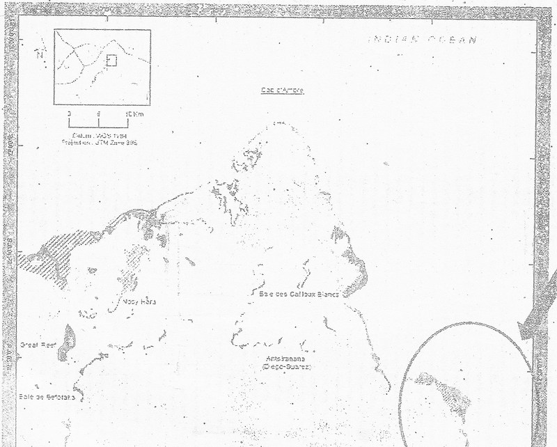
ANNEXE 2 du décret n° 2015-753 portant création de l'Aire Marine Protégée dénommée "Ambodivahibe" District Antsiranana II, Région DIANA Carte de zonage de l'Aire Marine Protégée "Ambodivahibe"
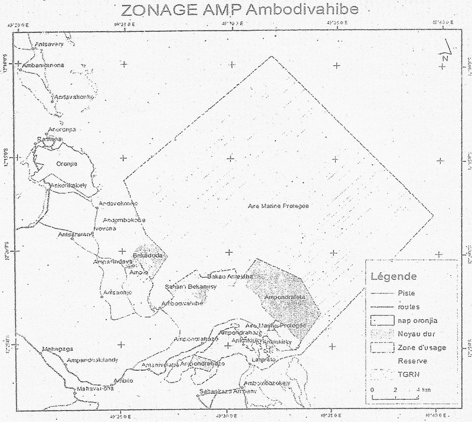 ANNEXE 3 du décret n° 2015-753 portant création de l'Aire Marine Protégée dénommée "Ambodivahibe" District Antsiranana II, Région DIANA Coordonnées géographique des points sommets de la limite de l'Aire Marine Protégée "Ambodivahibe" 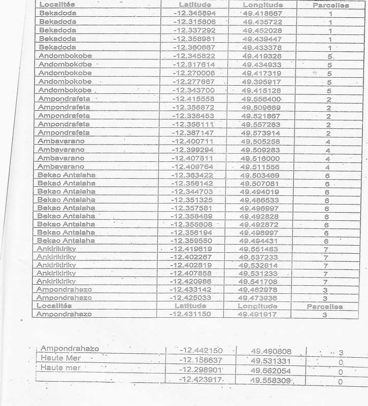
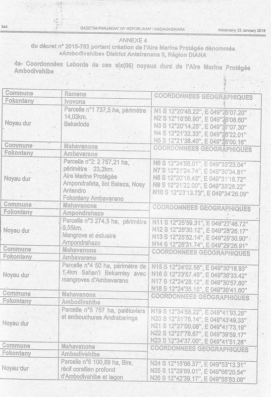
4b- Coordonnées Laborde des cinq (05) blocs de la zone tampon de l'Aire Marine Protégée Ambodivahibe
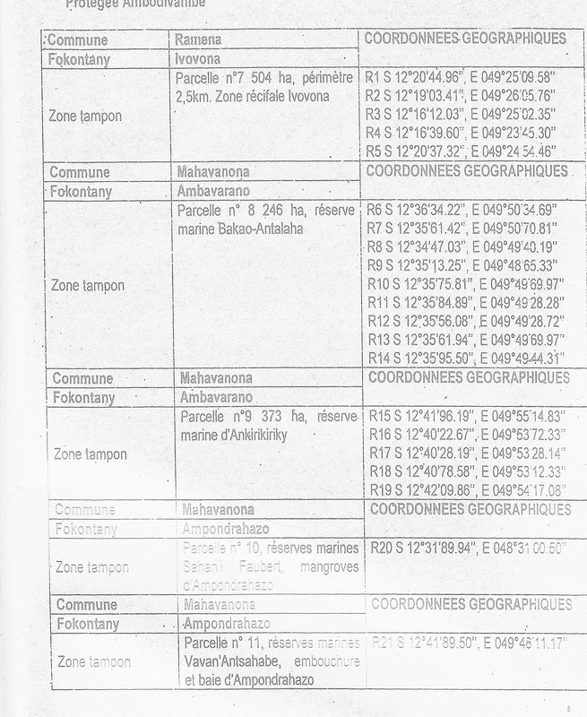 | |||||||||||||||||||||||||||||||||||||||||||||||||||||||||||||||||||||||||||||||||||||||||||||||||||||||||||||||||||||||||||||||||||||||||||||||||||||||||||||||||||||||||||||||||||||||||||||||||||||||||||||||||||||||||||||||||||||||||||||||||||||||||||||||||||||||||||||||||||||||||||||||||||||||||||||||||||||||||||||||||||||||||||||||||||||||||||||||||||||||||||||||||||||||||||||||||||||||||||||||||||||||||||||||||||||||||||||||||||||||||||||||||||||||||||||||||||||||||||||||||||||||||||||||||||||||||||||||||||||||||||||||||||||||||||||||||||||||||||||||||||||||||||||||||||||||||||||||
| 13 Janvier 2017 | 13-01-2017 | Arrêté n° 199/2017 Modifiant et complétant certaines dispositions de l’arrêté n° 23960/2016 du 9 novembre 2016 portant création, missions, organisation et fonctionnement du Comité de Pilotage dans la mise en œuvre de la Promesse de Sydney relative à la multiplication des Aires Marines Protégées à Madagascar N° J.O: 3747 Date J.O: 24 Avril 2017 Page J.O: 2347ETAT : En vigueur Voir le texte (VF) | Arrêté | 199/2017 | A199-2017 | Modifiant et complétant certaines dispositions de l’arrêté n° 23960/2016 du 9 novembre 2016 portant création, missions, organisation et fonctionnement du Comité de Pilotage dans la mise en œuvre de la Promesse de Sydney relative à la multiplication des Aires Marines Protégées à Madagascar | 3747 | 24 Avril 2017 | 24-04-2017 | 2347 | En vigueur |
| undefined | SECRETARIAT D'ETAT AUPRES DU MINISTERE DES RESSOURCES HALIEUTIQUES ET DE LA PECHE CHARGE DE LA MER (SEMRHPM) | 45157 | REPOBLIKAN'I MADAGASIKARA Fitiavana-Tanindrazana-Fandrosoana————— SECRETARIAT D’ETAT AUPRES DU MINISTERE DES RESSOURCES HALIEUTIQUES ET DE LA PECHE CHARGE DE LA MER ARRETE N°199/2017 Modifiant et complétant l’Arrêté n° 23960/2016 du 9 novembre 2016 portant création, missions, organisation et fonctionnement du Comité de Pilotage dans la mise en œuvre de la Promesse de Sydney relative à la multiplication des Aires Marines Protégées à Madagascar
LE SECRÉTAIRE D’ÉTAT AUPRÈS DU MINISTÈRE DES RESSOURCES HALIEUTIQUES ET DE LA PÊCHECHARGÉ DE LA MER
ARRETE : Article premier : Les dispositions de l’article 3 de l’Arrêté n° 23960/2016 du 9 novembre 2016 portant création, missions, organisation et fonctionnement du Comité de Pilotage dans la mise en œuvre de la Promesse de Sydney relative à la multiplication des Aires Marines Protégées à Madagascar sont modifiées et complétées comme suit : Article 3 : - Le COPIL est composé des représentants des institutions et entités suivantes :
Les membres du COPIL sont désignés par arrêté du Secrétaire d’Etat chargé de la Mer, sur proposition des Départements ministériels et entités dont ils sont issus. Le SEMer coordonne les ressources et l’expertise de ces différents Ministères ou Organismes. Article 02 :Le présent arrêté qui prend effet à compter de sa signature, sera enregistré, publié au Journal Officiel de la République et communiqué partout où besoin sera.
Fait à Antananarivo, le 13 Janvier 2017 LE SECRETAIRE D’ETATAUPRES DU MINISTERE DES RESSOURCES HALIEUTQUES ET DE LA PECHE CHARGE DE LA MER RANDRIANARISOA Léonide Ylénia | |||||||||||||||||||||||||||||||||||||||||||||||||||||||||||||||||||||||||||||||||||||||||||||||||||||||||||||||||||||||||||||||||||||||||||||||||||||||||||||||||||||||||||||||||||||||||||||||||||||||||||||||||||||||||||||||||||||||||||||||||||||||||||||||||||||||||||||||||||||||||||||||||||||||||||||||||||||||||||||||||||||||||||||||||||||||||||||||||||||||||||||||||||||||||||||||||||||||||||||||||||||||||||||||||||||||||||||||||||||||||||||||||||||||||||||||||||||||||||||||||||||||||||||||||||||||||||||||||||||||||||||||||||||||||||||||||||||||||||||||||||||||||||||||||||||||||||||||
| 09 Novembre 2016 | 09-11-2016 | Arrêté n° 23960/2016 Portant création, missions, organisation et fonctionnement du Comité de Pilotage dans la mise en œuvre de la Promesse de Sydney relative à la multiplication des Aires Marines Protégées à Madagascar. N° J.O: 3739 Date J.O: 06 Mars 2017 Page J.O: 1338ETAT : Abrogé Voir le texte (VF) | Arrêté | 23960/2016 | A23960-2016 | Portant création, missions, organisation et fonctionnement du Comité de Pilotage dans la mise en œuvre de la Promesse de Sydney relative à la multiplication des Aires Marines Protégées à Madagascar. | 3739 | 06 Mars 2017 | 06-03-2017 | 1338 | Abrogé |
| undefined | SECRETARIAT D'ETAT AUPRES DU MINISTERE DES RESSOURCES HALIEUTIQUES ET DE LA PECHE CHARGE DE LA MER (SEMRHPM) | 45244 | REPOBLIKAN’I MADAGASIKARA Fitiavana-Tanindrazana-Fandrosoana SECRETARIAT D'ETAT AUPRES DU MINISTERE DES RESSOURCES HALIEUTIQUES ET DE LA PECHE CHARGE DE LA MER ARRETE N° 23 960/2016 portant création, missions, organisation et fonctionnement du Comité de Pilotage dans la mise en œuvre de la Promesse de Sydney relative à la multiplication des Aires Marines Protégées à Madagascar. Le Secrétaire d'Etat auprès; du Ministère des Ressources Halieutiques et de la Pêche chargé de la Mer,
Arrête : Article premier. - Création et Objectif Il est créé un Comité de Pilotage désigné sous le sigle COPIL dont l'objectif est de réaliser et de mettre en œuvre la Promesse de Sydney, relative à la multiplication des Aires Marines Protégées (AMPs) à Madagascar. Il est placé sous la coordination du Secrétariat d'Etat chargé de la Mer (SEMer). Article 2. - Missions Le COPIL a pour mission de : - Appuyer le SEMer dans la réalisation des engagements pris par Madagascar au Congrès Mondial des Parcs de Sydney en novembre 2014 (Promesse de Sydney), dans la recherche de financements en vue de mettre en œuvre ces engagements, dans la réflexion sur les moyens de pérenniser les AMPs et dans la communication des informations entre les différents acteurs concernés; - Servir de plateforme d'orientation, de coordination, de coopération, de validation, de suivi-évaluation dans les différentes phases du processus (conception, planification, création, gestion, développement de textes et outils, etc,...) pour la mise en œuvre de la Promesse 'de Sydney; - Echanger et capitaliser les acquis et les expériences en matière de gestion des AMPs et de gestion durable des ressources biologiques marines; - Discuter de textes réglementaires au Code des Aires Protégées s'appliquant au milieu marin; - Appuyer les Déléguées Régionales du SEMer en tant que Points Focaux au niveau des régions dans la mise en place d'une coordination de proximité impliquant les autres secteurs dans la planification et la mise en œuvre des AMPs; - Réfléchir et identifier les risques et contraintes dans l'atteinte des objectifs de la promesse de Sydney concernant les AMPs; et - Porter les éventuels conflits d'intérêts entre les secteurs et les secteurs concernés au niveau des instances compétences (commissions interministérielles, cellules environnementales, etc). Article 3. - Composition Le COPIL est composé des représentants des institutions et entités suivantes: - Deux (2) représentants du SEMer; - Un (l) représentant du Ministère en charge de l'Aménagement du Territoire; - Un (1) représentant du Ministère en charge des Mines et du Pétrole; - Un (1) représentant du Ministère en charge des Ressources Halieutiques et de la Pêche; - Un (1) représentant du Ministère en charge de l'Environnement, de l'Ecologie et des Forêts; - Un (1) représentant du Ministère en charge de l'Eau, de l'Assainissement et de l'Hygiène; - Un (1) représentant du Ministère en charge de la Recherche Scientifique; - Un (1) représentant du Ministère en charge du Transport maritime; - Un (1) représentant du Ministère en charge du Tourisme; - Deux (2) représentants des Bailleurs de Fonds; - Quatre (4) représentants des ONGs environnements; et - Deux (2) représentants de groupement des secteurs privés exerçant leurs activités dans le domaine marin ou maritime. Le SEMer coordonne les ressources et l'expertise de ces différents Ministères ou Organismes. Article 4. - Organisation - Le COPIL peut constituer des Groupes thématiques de travail spécialisés dans l'étude détaillée de certains sujets techniques et sur des questions scientifiques particulières. Le COPIL peut solliciter à chaque fois que cela est nécessaire, l'appui de consultants et experts étrangers ou de toute autre personne en raison de ses compétences techniques; - Le COPIL est présidé par le Coordinateur Général de Programme du SEMer; - Le Secrétariat du COPIL est assuré par l'autre membre du SEMer. Article 5. - Fonctionnement - Le COPIL se réunit deux fois par an sur convocation de son Président en session ordinaire; - A la demande de la majorité des membres du COPIL ou par suggestion du SEMer, le Président du COPIL peut appeler des réunions extraordinaires. Article 6. - Le présent arrêté est enregistré et publié au Journal Officiel de la République. Antananarivo, le 9 novembre 2016. Le Secrétariat d’Etat Auprès du Ministre des Ressources Halieutique et de la Pèche Chargé de la Mer Dr RANDRIANARISOA Léonide Ylénia
| |||||||||||||||||||||||||||||||||||||||||||||||||||||||||||||||||||||||||||||||||||||||||||||||||||||||||||||||||||||||||||||||||||||||||||||||||||||||||||||||||||||||||||||||||||||||||||||||||||||||||||||||||||||||||||||||||||||||||||||||||||||||||||||||||||||||||||||||||||||||||||||||||||||||||||||||||||||||||||||||||||||||||||||||||||||||||||||||||||||||||||||||||||||||||||||||||||||||||||||||||||||||||||||||||||||||||||||||||||||||||||||||||||||||||||||||||||||||||||||||||||||||||||||||||||||||||||||||||||||||||||||||||||||||||||||||||||||||||||||||||||||||||||||||||||||||||||||||
| 28 Avril 2015 | 28-04-2015 | Décret n° 2015-783 Portant création de l'Aire Protégée "Maromizaha" Communes rurales : Andasibe, Ambatovola, District de Moramanga, Région Alaotra Mangoro. N° J.O: 3687 Date J.O: 06 Juin 2016 Page J.O: 3351ETAT : En vigueur Voir le texte (VF) | Décret | 2015-783 | D2015-783 | Portant création de l'Aire Protégée "Maromizaha" Communes rurales : Andasibe, Ambatovola, District de Moramanga, Région Alaotra Mangoro. | 3687 | 06 Juin 2016 | 06-06-2016 | 3351 | En vigueur |
| undefined | MINISTERE DE L'ENVIRONNEMENT, DE L'ECOLOGIE, DE LA MER ET DES FORETS (MEEMF) | 44639 | REPOBLIKAN'IMADAGASIKARA Fitiavana-Tanindrazana-Fandrosoana ————— MINISTERE DE L'ENVIRONNEMENT, DE L'ECOLOGIE,DE LA MER ET DES FORETS ————— DECRET N° 2015-783 Portant PortantCréation de l'aire Protégée "MAROMIZAHA" Communesrurales : Andasibe, Ambatovola District de Moramanga, Région Alaotra-Mangoro. LEPREMIER MINISTRE, CHEF DU GOUVERNEMENT,
D E C R E T E :
TITRE PREMIER DE LA CREATION ET DELIMITATION DE L’AIRE PROTEGEE
Articlepremier. En application de l’article 2 et de l’article 21 de la Loin°2015-005 portant refonte du Code de gestion des Aires Protégées, il est crééune Aire Protégée dénommée «Maromizaha» de statut « Réservedes Ressources Naturelles », équivalent de la catégorie VI selon laclassification de l’Union Internationale pour la Conservation de la Nature,située dans la Région Alaotra Mangoro, au carrefour des Communes Ruralesd’Andasibe et d’Ambatovola, District de Moramanga telle qu’elle figure sur la carte delocalisation de l’Aire Protégée« MAROMIZAHA »en annexe I du présent décret.
L’Aire Protégée Maromizaha d’une superficie totale de MILLE HUIT CENT QUATRE VINGT HECTARES (1 880 Ha) fait partiedu Système des Aires Protégées de Madagascar.
Article2. Les coordonnées géographiques des points limites de l’Aire Protégée « MAROMIZAHA »sont fournies en Annexe II du présent décret.
Le périmètre de l’Aire Protégéedépendant du domaine privé de l’Etat doit être immatriculé au nom de l’EtatMalagasy aux fins de la délivrance d’un titre foncier portant le nom de l’Aire Protégée « MAROMIZAHA »suivantla procédure de sécurisation foncière en vigueur.
LeMinistère chargé des Aires Protégées doit déclencher le processusd’immatriculation auprès de la Direction générale chargée des ServicesFonciers, dès la publication au Journal Officiel du présent décret.
TITRE II DE L’OBJECTIF DE GESTION DE L’AIRE PROTEGEE
Article 3. Le principal objectif de l’Aire Protégéeest de préserver la biodiversité, d’utiliser et valoriser perpétuellement lesressources naturelles afin de contribuer au développement durable de la zoneconcernée.
Les objectifsspécifiques l’Aire Protégée sont d’assurer :
- La viabilité de la biodiversité par le contrôle desprincipales menaces telles que les défrichements, la pratique des tavy, chasseset braconnages, les feux, prélèvement des produits ligneux, charbonnage ; - L’utilisation durable des ressources naturelles del’Aire Protégée contribuant à l’amélioration de la qualité de vie locale et àla conservation de la biodiversité ; - La gestion de l’Aire Protégée suivant les principesde bonne gouvernance, et les règlestraditionnelles ou coutumières sur l’utilisation des ressources naturelles ; - La promotion de l’écotourisme aux fins dedéveloppement socio-économique et culturel en relation avec la conservationtout en impliquant les communautéslocales ;
TITRE III DE L’ORGANISATION DE GESTION DE L’AIRE PROTEGEE
Article 4. Le Ministère chargé des Aires protégées est désignée Gestionnaire de l’AireProtégée « Maromizaha ». La délégation de gestion peut toutefoisêtre accordée par voie réglementaire à une ou des personnes morales de droitpublic ou de droit privé laquelle détermine les termes de la délégation, les droits etobligations des parties. Un Comitéd’Orientation et de Suivi (COS), dont le fonctionnement et les membres serontfixés par voie réglementaire assure le suivi de l’exécution des actionsdécoulant du présent décret. Il est présidé par la Direction Régionale chargéedes Aires Protégées. Le COS comprend notamment les Représentants de la Région,ceux des Services déconcentrés des ministères intéressés, des collectivitésterritoriales décentralisées, du gestionnaire ou gestionnaire délégué et desreprésentants des Communautés de base riveraines de l’aire protégée, ainsi quetoute personne ou organisme choisi pour ses compétences particulières.
TITRE IV DE LA GOUVERNANCE DE L’AIRE PROTEGEE
Article 5. Le mode de gouvernance qui s’applique à l’Aire Protégée est la cogestion detype collaboratif entre le gestionnaire ou le gestionnaire délégué et lescommunautés locales.
Conformément au principe de gouvernance du Système des AiresProtégées de Madagascar tel que défini dans l’article 6 de la loi n°2015-005 du26 février 2015, le gestionnaire ou le gestionnaire délégué doit, dans le cadrede gestion de l’Aire Protégée :
- s’assurer de la transparence et respecter leprincipe de responsabilité vis-à-vis des diverses parties prenantes et dupublic ; - respecter le principe de redevabilité ; - respecter le principe de partage équitable desavantages.
TITRE V DE L’AMENAGEMENT DE L’AIRE PROTEGEE
Article 6. L’AireProtégée Maromizaha comprend un Noyau Dur et une Zone Tampon
Article 7. Le Noyau Dur s’étend sur une superficie de964 ha. Le NoyauDur comprend deux Zones de Conservation :
Toute activité, toute entrée ettoute circulation y est interdite
Article 8. La Zone Tampon : zone jouxtant le « NoyauDur », dans laquelle les activités sont limitées et régies par voieréglementaire pour assurer une meilleure protection de l’Aire Protégée. Lessous-zones faisant partie de la « Zone Tampon » sont :
Conformément aux dispositions del’article 40 de la loi n°2015-005 du 22 janvier26 février 2015 portant refontedu code de gestion des Aires Protégées, les droits et obligations sont consignés par des cahiers des chargesfixées par voie réglementaire.
Le zonage global de l’ensemblede la Nouvelle Aire Protégée est indiqué sur la carte d’aménagement annexée au présent décret(Annexe III).
L’étendue de ces zonesfixées dans le plan d’aménagement et de gestion ayant reçu l’avis favorable dela Commission du Système des Aires Protégées de Madagascar peut faire objetd’une révision selon les résultats de recherches des suivis écologiques etsocioéconomiques.
TITREVI DE LA REGLEDE GESTION DE L’AIRE PROTEGEE
Article 9. Toute activité extractive hormis lesautorisations octroyées antérieurement à l’officialisation de l’Aire Protégéeest également interdite :
Dans les ZonesTampon - Toutfeu intentionnellement allumé, provoqué oupar communication - Les défrichements et les cultures surbrûlis ; - La chasse, la vente et la consommation d'espècesprotégées destinée à des fins commerciales; - Les activités de pâturage sous quelque forme quece soit sauf dans les deux zones de développementdurable (ZDD) - Les occupations humaines permanentes outemporaires sauf dans les zones d’occupations contrôlées (ZOC)
Dans le Noyau Dur - Toute pénétration sans autorisation dugestionnaire - Tout feu intentionnellement allumé, provoqué oupar communication - Toute recherche scientifique non autorisée parle Ministère chargé des Aires Protégées - Toute activité extractive
Article10. Hormis les cas prévus par la loi n°2015-005 du 26 février 2015 portantrefonte du Code de Gestion des Aires Protégées, sont notamment autorisés,conformément au plan d’aménagement et degestion.
Toutefois,les activités ci-après sont réglementées conformément au plan d’aménagement etde gestion et selon un cahier de charges établi entre le gestionnaire et lesusagers à l’intérieur de la zone tampon tout en respectant le règlementintérieur de l’Aire Protégée :
- les travaux d’aménagement en faveur du tourismeécologique ; - les activités agricoles ; - les activités liées aux recherchesscientifiques ; - les activités liées à la conservation :suivi écologique, restauration, reboisement, contrôle et surveillance ; - l’accès aux sites cultuels par les sentiers ymenant et la pratique des activités cultuelles. - le prélèvement d’autres produits accessoires desforêts respectant les principes de l’utilisation durable ; - le tournage de films et la prise dephotographies ; - les droits d’usage ; - l’utilisation piétonnière des principauxsentiers de liaison existante. - le prélèvement des produits accessoires des forêtsrespectant les principes de l’utilisation durable et selon les traditionspersistantes dans ce site bioculturel.
Article 11. Conformément aux dispositions de l’article 43 de la loin°2015-005 du 26 février 2015 portantrefonte du Code de Gestion des Aires Protégées, la visite des Aires Protégées« Maromizaha » à des fins touristiques et de recherches scientifiquesest soumise selon le cas au paiement des droits d’entrée, des droits derecherche, des droits de propriété intellectuelle, des droits de filmage dontles modalités de perception sont fixées par voie réglementaire.
Lavisite des circuits écotouristiques ouverts à cet effet est soumise au servicede guidage respectant les normes selon un code de conduite établi par legestionnaire.
TITRE VII DE LA REPRESSION DES INFRACTIONS COMMISES DANS L’AIRE PROTEGEE
Article 12. Les infractions aux dispositions du présent décret sontconstatées et punies conformément aux dispositions du Titre V de la Loi portantRefonte du Code de Gestion des Aires Protégées et, en cas de silence, auxautres textes en vigueur.
TITRE VIII DISPOSITIONS FINALES
Article 13. Vu l’urgence et conformément aux dispositions del’article 6 de l’ordonnance n°62-041 du 19 septembre 1962 relative auxdispositions générales de droit interne et de droit international privé, leprésent décret entre en vigueur dès sa signature et après avoir reçu unepublicité suffisante indépendamment desa publication au Journal Officiel de la République.
Article 14. Le Ministre d’Etat chargé des Projets Présidentiels, del’Aménagement du Territoire et de l’Equipement ; Le Ministre auprès de laPrésidence chargé des Mines et du Pétrole ; Le Ministre de la Justice,Garde des Sceaux ; Le Ministre de l’Intérieur et de la Décentralisation ;Le Ministre d’Agriculture ; Le Ministre des Travaux Publics ; LeMinistre du Tourisme, des Transports et de la Météorologie ; Le Ministrede l’Energie et des Hydrocarbures ; Le Ministre de I ’EnseignementSupérieur et de la Recherche Scientifique ; Le Ministre del’Environnement, de l’Ecologie, de la Mer et des Forêts ; Le Ministre desRessources Halieutiques et de la Pêche ; Le Ministre de l’Elevage ;Le Ministre de la Culture et de l’Artisanat ; Le Ministre de laCommunication et des Relations avec les Institutions ; Le Ministre de laPopulation, de la Protection Sociale et de la Promotion de la Femme et LeSecrétaire d’Etat auprès du Ministère de la Défense Nationale chargé de laGendarmerie sont chargés, chacun en ce qui le concerne, de l’exécution duprésent décret qui sera publié au Journal Officiel de la République deMadagascar.
Fait à Antananarivo, le 28 Avril 2015 Général de Brigade Aérienne RAVELONARIVO Jean
Par le Premier Ministre, Chef du Gouvernement, Le Ministre d'Etat chargé des Projets Présidentiels, de l'Aménagement du Territoire et de l'Equipement, RAKOTOVAO Rivo
Le Ministre auprès de la Présidence chargé des Mines et du Pétrole, LALAHARISAINA Joéli Valérien
Le Ministre de la Justice, Garde des Sceaux, RAMANANTENASOA Noëline
Le Ministre de l'Intérieur et de la Décentralisation, MAHAFALY Solonandrasana Olivier
Le Ministre d'Agriculture, RAVATOMANGA Roland
Le Ministre des Travaux Publics, RATSIRAKA Iarovana Roland
Le Ministre du Tourisme, des Transports et de la Météorologie, ANDRIANTIANA Jacques Ulrich
Le Ministre de l'Energie et des Hydrocarbures, HORACE Gatien
Le Ministre de l'Enseignement Supérieur et de la Recherche Scientifique, RASOAZANANERA Marie Monique
Le Ministre de l'Environnement, de l'Ecologie, de la Mer et des Forêts, BEBOARIMISA Ralava
Le Ministre des Ressources Halieutiques et de la Pêche, AHMAD
Le Ministre de l'Elevage, RAMPARANY Anthelme
Le Ministre de la Culture et de l'Artisanat, RASAMOELINA Brigitte
Le Ministre de la Communication et des Relations avec les Institutions, ANDRIANJAT0 RAZAFINDAMBO Vonison
Le Ministre de la Population, de la Protection Sociale et de la Promotion de la Femme, RËALY Onitiana Voahariniaina
Le Secrétaire d'Etat auprès du Ministère de la Défense Nationale chargé de la Gendarmerie, Général de corps d'armée PAZA Didier Gérard
ANNEXE I. Carte de localisation de l’Aire Protégée« MAROMIZAHA » 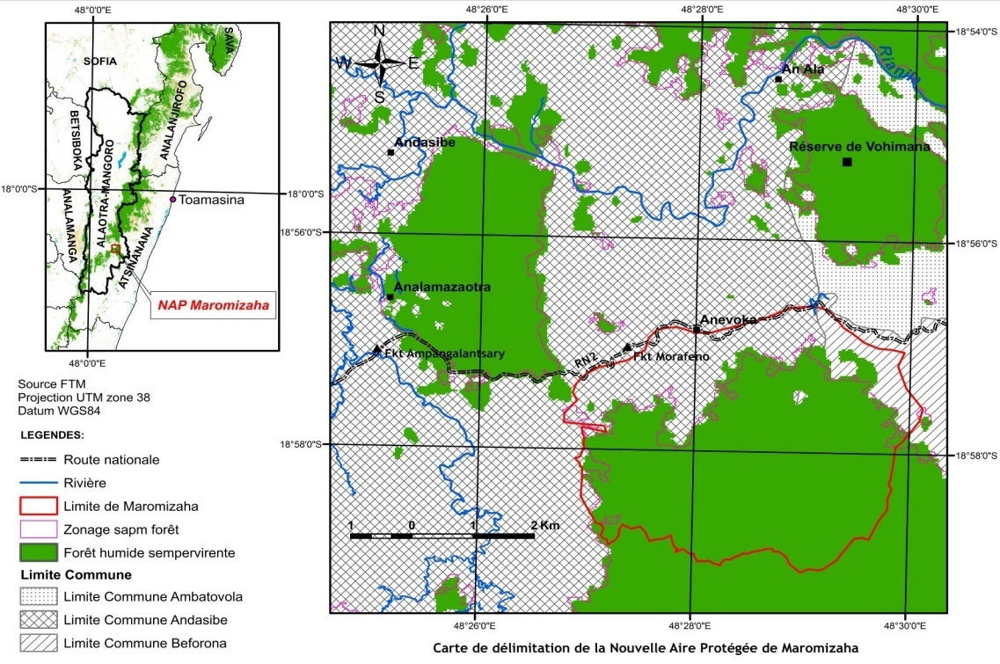 Vu pour être annexée au décret n°2015-783 portant créationde l’aire protégée « Maromizaha » Communes rurales : Andasibe, Ambatovola; district deMoramanga; région Alaotra-Mangoro Le Premier Ministre, Chef du Gouvernement, Général de Brigade Aérienne RAVELONARIVO Jean ANNEXE II dudécret n° 2015-783 Portant création d’ l’AireProtégée « MAROMIZAHA » Communes Rurales Andasibe, AmbatovolaDistrict de Moramanga, Région Alaotra-Mangoro Coordonnées Géographiques des Points Limites del’Aire Protégée « MAROMIZAHA » X longitude Y latitude (mètres)
Vu pour être annexée au décret n°2015-783 portant création de l’aire protégée « Maromizaha » Communes rurales : Andasibe, Ambatovola; district de Moramanga; région Alaotra-Mangoro Le Premier Ministre, Chef du Gouvernement Général de Brigade Aérienne RAVELONARIVO Jean Pour ampliation conforme Antananarivo, le LE SECRETAIRE GENERAL DU GOUVERNEMENT ZAFINANDRO Armand ANNEXE III. Carte de zonage de l’Aire Protégée MAROMIZAHA 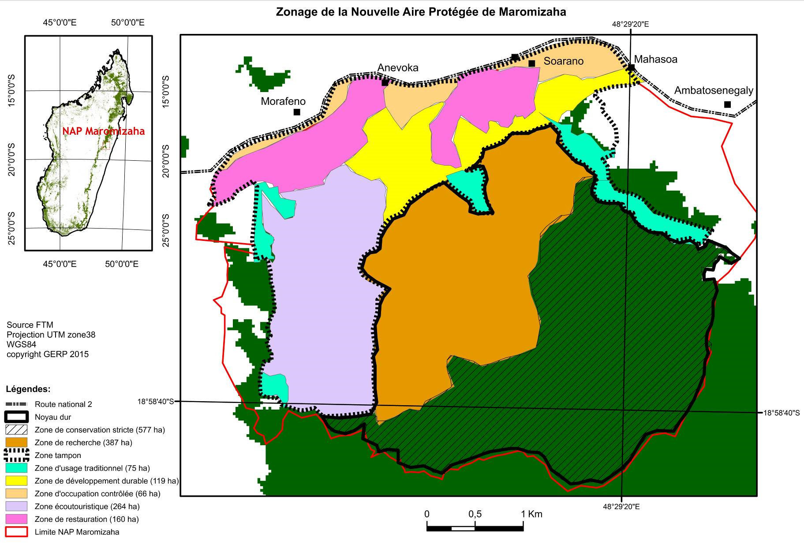 Vu pour être annexée au décret n°2015-783 portant création de l’aire protégée « Maromizaha » Communes rurales : Andasibe, Ambatovola; district de Moramanga; région Alaotra-Mangoro Le Premier Ministre, Chef du Gouvernement Général de Brigade Aérienne RAVELONARIVO Jean Pour ampliation conforme Antananarivo, le LE SECRETAIRE GENERAL DU GOUVERNEMENT ZAFINANDRO Armand
| |||||||||||||||||||||||||||||||||||||||||||||||||||||||||||||||||||||||||||||||||||||||||||||||||||||||||||||||||||||||||||||||||||||||||||||||||||||||||||||||||||||||||||||||||||||||||||||||||||||||||||||||||||||||||||||||||||||||||||||||||||||||||||||||||||||||||||||||||||||||||||||||||||||||||||||||||||||||||||||||||||||||||||||||||||||||||||||||||||||||||||||||||||||||||||||||||||||||||||||||||||||||||||||||||||||||||||||||||||||||||||||||||||||||||||||||||||||||||||||||||||||||||||||||||||||||||||||||||||||||||||||||||||||||||||||||||||||||||||||||||||||||||||||||||||||||||||||||
| 28 Avril 2015 | 28-04-2015 | Décret n° 2015-786 Portant création de l'Aire Protégée dénommée "Nord-Ifotaka" Communes rurales d'Ifotaka (District d'Amboasary Sud, Région Anosy) et d'Ambanisarika (District d'Ambovombe Androy, Région Androy). N° J.O: 3687 Date J.O: 06 Juin 2016 Page J.O: 3410ETAT : En vigueur Voir le texte (VF) | Décret | 2015-786 | D2015-786 | Portant création de l'Aire Protégée dénommée "Nord-Ifotaka" Communes rurales d'Ifotaka (District d'Amboasary Sud, Région Anosy) et d'Ambanisarika (District d'Ambovombe Androy, Région Androy). | 3687 | 06 Juin 2016 | 06-06-2016 | 3410 | En vigueur | undefined | MINISTERE DE L'ENVIRONNEMENT, DE L'ECOLOGIE, DE LA MER ET DES FORETS (MEEMF) | 44641 | REPOBLIKAN'I MADAGASIKARA Fitiavana-Tanindrazana-Fandrosoana ————— MINISTERE DE L’ENVIRONNEMENT, DE L’ECOLOGIE, DE LA MER ET DES FORETS ————— DECRET N° 2015-786 Portant création de l’Aire Protégée denommée « NORD - IFOTAKA» Communes rurales d’Ifotaka (district d’Amboasary Sud, Région Anosy) et d’Ambanisarika (district d’Ambovombe Androy, Région Androy)
LE PREMIER MINISTRE, CHEF DU GOUVERNEMENT,
D E C R E T E :
TITRE PREMIER DE LA CREATION ET DELIMITATION DE L’AIRE PROTEGEE
Article premier. Conformément aux dispositions de l’article 2 et de l’article 19de la loi n°2015-005 du 26 février 2015 portant refonte du Code de gestion des Aires Protégées, il est créé une Aire Protégée dénommée «Nord - Ifotaka» de statut « Paysage Harmonieux Protégé »,équivalent de la catégorie V selon la classification de l’Union Internationale pour la Conservation de la Nature, située dans les Régions Anosy (District d’Amboasary Sud) et Androy (District d’Ambovombe Androy),
La liste des Communes et Fokontany concernés par le Paysage Harmonieux Protégé « Nord - Ifotaka »figure en Annexe II.
Le paysage Harmonieux Protégé« Nord - Ifotaka » d’une superficie totale de VINGT-DEUX MILLE DEUX CENT QUATRE-VINGT-HUIT HECTARES (22 288Ha) environ fait partie du Système des Aires Protégées de Madagascar.
Article 2. La carte de localisation du Paysage Harmonieux Protégé «Nord - Ifotaka» figure en Annexe I du présent décret. Les descriptifs des points limites de l’Aire Protégée « Nord -Ifotaka » sont définis à l'annexe V du présent décret.
Le périmètre de l’Aire Protégée dépendant du domaine privé de l’Etat doit être immatriculé au nom de l’Etat Malagasy aux fins de la délivrance d’un titre foncier portant le nom de l’Aire Protégée suivant la procédure de sécurisation foncière en vigueur.
Le Ministère chargé des Aires Protégées doit déclencher le processus d’immatriculation auprès de la Direction générale chargée des Services Fonciers, dès la publication au Journal Officiel du présent décret.
TITRE II DE L’OBJECTIF DE GESTION DE L’AIRE PROTEGEE
Article 3. Les objectifs principaux de gestion poursuivis dans le Paysage Harmonieux Protégé« Nord - Ifotaka » sont principalement d’assurer la préservation et le maintien de la biodiversité, la durabilité des fonctions écologiques et l’utilisation durable des ressources naturelles.
Les objectifs spécifiques de gestion sont de :
L’activité de développement est à promouvoir dans la zone périphérique, afin d’améliorer le niveau de vie de la population.
TITRE III DE L’ORGANISATION DE GESTION DE L’AIRE PROTEGEE
Article 4 . Le Ministère chargé des Aire Protégée est désigné gestionnaire de l’Aire Protégée « Ankodida ». La délégation de Gestion peut toutefois être accordée par voie réglementaire à une ou des personnes morales de droit public ou de droit privé laquelle détermine les termes de délégation, les droits et obligations des parties.
Un Comité d’Orientation et de Suivi assure le suivi de l’exécution des actions découlant du présent décret pour chaque Région, Anosy et Androy. Il est présidé par la Direction Régionale du Ministère chargé des Aires Protégées et est notamment constitué des représentants techniques déconcentrés concernés, de la Région, des collectivités territoriales décentralisées, du gestionnaire ou gestionnaire délégué du Paysage Harmonieux Protégé « Nord Ifotaka » et des représentants des Communautés de base riveraines de l’aire protégée, ainsi que toute personne ou organisme choisi pour ses compétences particulières.
TITRE IV DE LA GOUVERNANCE DE L’AIRE PROTEGEE
Article 5. Le mode de gouvernance qui s’applique à l’Aire Protégée « Nord Ifotaka » est la gouvernance partagée de type collaboratif entre le gestionnaire ou le gestionnaire délégué et les communautés locales.
Conformément au principe de gouvernance du Système des Aires Protégées de Madagascar tel que défini dans l’article 6 de la loi n° 2015-005 du 26 février 2015, le gestionnaire ou le gestionnaire délégué doit, dans le cadre de gestion de l’Aire Protégée :
TITRE V DE L’AMENAGEMENT DE L’AIRE PROTEGEE
Article 6 . Le Paysage Harmonieux Protégé« Nord - Ifotaka » est subdivisé selon les unités d’aménagement suivantes :
Tout accès dans ces zones est restreint et réglementé suivant les textes en vigueur sur les Aires Protégées et transfert de gestion des ressources naturelles à Madagascar L’étendue de la Zone Tampon (ZT) peut faire l’objet d’une révision selon les besoins du Plan d’Aménagement et de Gestion (PAG). La carte des limites externes et la carte de zonage de l’aire protégée Nord Ifotaka sont définies respectivement en annexe III et IV. TITRE VI DE LA REGLE DE GESTION DE L’AIRE PROTEGEE
Article 7. Le Plan d’Aménagement et de Gestion précise les modalités de gestion de Paysage Harmonieux Protégé« Nord - Ifotaka », lesquelles doivent impliquer la population locale et comporte les mesures d’accompagnement nécessaires pour contribuer au développement durable des Régionsconcernées.
Outre les cas prévus par les articles 41, 42, 44, 51, 52, et 53 de la Loi n° 2015-005 du 26 février 2015 portant refonte du Code de gestion des Aires Protégées, les activités suivantes sontstrictement interdites à l’intérieur du Noyau Dur de l’Aire Protégée, notamment:
Hormis les cas prévus et réprimés par la loi n° 2015-005 du 26 février 2015 portant Code de Gestion des Aires Protégées, les activités incompatibles avec les objectifs de gestion de l’Aire Protégée « Ankodida »sont strictement interdites à l’intérieur de la Zone Tampon, notamment :
Dans la Réserve forestière villageoise, toutes les activités qui peuvent entraîner des impacts négatifs majeurs ou mineurs sur l’environnement sont interdites :
Article 8 . Toutefois, sont notamment autorisés à l’intérieur du Noyau Dur, conformément au plan de gestion :
Dans la Réserve forestière villageoise, sont notamment autorisés, conformément au plan d’aménagement et de gestion :
Les activités ci-après sont réglementées conformément au plan d’aménagement et de gestion etsi nécessaire, autorisées par l’Administration chargée des Aires Protégées sous réserve de l’avis favorable du gestionnaire, à l’intérieur de la Zone Tampon de l’Aire Protégée : Les activités extractives dont les permis ou autorisations sont antérieurs à la mise en protection temporaire de l’Aire Protégée, et moyennant une étude d’impact environnement ou une mise en conformité environnementale préalable.
Dans la Zone de droit d’Usage (ZDU)
Dans la Zone de Restauration (ZR)
Dans la Zone de Service (ZS) d’intérêt écotouristique
Dans la Zone de Cultures (ZC)
Dans la Zone de Production des Planches
Dans la Zone de Production de Charbon de bois
Article 9. Conformément aux dispositions de l’article 40 de la loi n°2015-005 du 26 février 2015 portant refonte du code de gestion des Aires Protégées, en cas de découverte des produits extractifs dans l’Aire Protégée « Nord Ifotaka », et dans une perspective d’une cohabitation, il ne pourra être procédé à l’exploitation qu’après modification du zonage interne de cette Aire Protégée.
Article 10. Conformément aux dispositions de l’article 43 alinéa 2 de la loi n°2015-005 du 26 février 2015 portant refonte du Code de Gestion des Aires Protégées, la visite de Paysage Harmonieux Protégé« Nord - Ifotaka » à des fins touristiques et de recherches scientifiques est soumise selon le cas au paiement des droits d’entrée, des droits de recherche, des droits de propriété intellectuelle, des droits de filmage dont les modalités de perception sont fixées par voie réglementaire.
TITRE VII DE LA REPRESSION DES INFRACTIONS COMMISES DANS L’AIRE PROTEGEE
Article 11. Les infractions aux dispositions du présent Décret sont constatées et punies conformément aux dispositions de l’article 55 à 79 de la loi n° 2015-005 du 26 février 2015 portant refonte du Code de gestion des Aires Protégées et, en cas de silence, aux autres textes en vigueur.
TITRE VIII DISPOSITIONS FINALES
Article 12. Les Annexes I, II, III, IV et V cités ci-dessus font partie intégrante du présent décret.
Article 13. En raison de l’urgence et conformément aux dispositions des articles 4 et 6 alinéa 2 de l’ordonnance n°62-041 du 19 septembre 1962 relative aux dispositions générales de droit interne et de droit international privé, le présent décret entre immédiatement en vigueur dès sa publication par voie radiodiffusée ou télévisée, indépendamment de son insertion au Journal Officiel de la République.
Article 14. Le Ministre d’Etat chargé des Projets Présidentiels, de l’Aménagement du Territoire et de l’Equipement ; Le Ministre auprès de la Présidence chargé des Mines et du Pétrole ; Le Ministre de la Justice, Garde des Sceaux ; Le Ministre de l’Intérieur et de la Décentralisation ; Le Ministre d’Agriculture ; Le Ministre des Travaux Publics ; Le Ministre du Tourisme, des Transports et de la Météorologie ; Le Ministre de l’Energie et des Hydrocarbures ; Le Ministre de I ’Enseignement Supérieur et de la Recherche Scientifique ; Le Ministre de l’Environnement, de l’Ecologie, de la Mer et des Forêts ; Le Ministre de la Pêche et des Ressources Halieutiques ; Le Ministre de l’Elevage ; Le Ministre de la Culture et de l’Artisanat ; Le Ministre de la Communication et des Relations avec les Institutions, Le Ministre de la Population, de la Protection Sociale et de la Promotion de la Femme et Le Secrétaire d’Etat auprès du Ministère de la Défense Nationale chargé de la Gendarmerie sont chargés, chacun en ce qui le concerne, de l’exécution du présent décret qui sera publié au Journal Officiel de la République de Madagascar.
Fait à Antananarivo, le 28 avril 2015
Par le Premier Ministre, Chef du Gouvernement, Général de Brigade Aérienne RAVELONARIVO Jean
Le Ministre d’Etat chargé des Projets Présidentiels, de l’Aménagement du Territoire et de l’Equipement, RAKOTOVAO Rivo
Le Ministre auprès de la Présidence chargé des Mines et du Pétrole, LALAHARISAINA Joéli Valérien
Le Ministre de la Justice, Garde des Sceaux, RAMANANTENASOA Noëline
Le Ministre de l’Intérieur et de la Décentralisation, MAHAFALY Solonandrasana Olivier
Le Ministre d’Agriculture, RAVATOMANGA Roland
Le Ministre des Travaux Publics, RATSIRAKA Iarovana Roland
Le Ministre du Tourisme, des Transports et de la Météorologie, ANDRIANTIANA Jacques Ulrich
Le Ministre de l’Energie et des Hydrocarbures, HORACE Gatien
Le Ministre de l’Enseignement Supérieur et de la Recherche Scientifique, RASOAZANANERA Marie Monique
Le Ministre de l’Environnement, de l’Ecologie, de la Mer et des Forêts, BEBOARIMISA Ralava
Le Ministre des Ressources Halieutiques et de la Pêche, AHMAD
Le Ministre de l’Elevage, RAMPARANY Anthelme
Le Ministre de la Culture et de l’Artisanat, RASAMOELINA Brigitte
Le Ministre de la Communication et des Relations avec les Institutions, ANDRIANJAT0 RAZAFINDAMBO Vonison
Le Ministre de la Population, de la Protection Sociale et de la Promotion de la Femme, RËALY Onitiana Voahariniaina
Le Secrétaire d’Etat auprès du Ministère de la Défense Nationale chargé de la Gendarmerie, Général de corps d’armée PAZA Didier Gérard | ||||||||||||||||||||||||||||||||||||||||||||||||||||||||||||||||||||||||||||||||||||||||||||||||||||||||||||||||||||||||||||||||||||||||||||||||||||||||||||||||||||||||||||||||||||||||||||||||||||||||||||||||||||||||||||||||||||||||||||||||||||||||||||||||||||||||||||||||||||||||||||||||||||||||||||||||||||||||||||||||||||||||||||||||||||||||||||||||||||||||||||||||||||||||||||||||||||||||||||||||||||||||||||||||||||||||||||||||||||||||||||||||||||||||||||||||||||||||||||||||||||||||||||||||||||||||||||||||||||||||||||||||||||||||||||||||||||||||||||||||||||||||||||||||||||||||||||||||
| 28 Avril 2015 | 28-04-2015 | Décret n° 2015-788 Portant création de l'Aire Protégée dénommée "Amoron'i Onilahy" Communes rurales Ambohimahavelona, Andranohinaly, Saint Augustin, Soalara Sud, Ambolofoty, Manorofify, Antanimena Onilahy, District de Toliara II, Communes rurales Tameantsoa, Ankazomanga Andrefana, Antohabato et Tongobory, District de Betioky Sud, Région Atsimo Andrefana. N° J.O: 3687 Date J.O: 06 Juin 2016 Page J.O: 3420ETAT : En vigueur Voir le texte (VF) | Décret | 2015-788 | D2015-788 | Portant création de l'Aire Protégée dénommée "Amoron'i Onilahy" Communes rurales Ambohimahavelona, Andranohinaly, Saint Augustin, Soalara Sud, Ambolofoty, Manorofify, Antanimena Onilahy, District de Toliara II, Communes rurales Tameantsoa, Ankazomanga Andrefana, Antohabato et Tongobory, District de Betioky Sud, Région Atsimo Andrefana. | 3687 | 06 Juin 2016 | 06-06-2016 | 3420 | En vigueur | . Décret d'application des articles 2 et 15 de la loi n°2015-005 du 26/02/2015 . Voir annexes I, II, III, IV, V, VI et VII au même J.O page 3432 | undefined | ,MINISTERE DE L'ENVIRONNEMENT, DE L'ECOLOGIE, DE LA MER ET DES FORETS (MEEMF) | 44642 | REPOBLIKAN'I MADAGASIKARA Fitiavana-Tanindrazana-Fandrosoana ————— MINISTERE DE L’ENVIRONNEMENT, DE L’ECOLOGIE, DE LA MER ET DES FORETS ————— DECRET N° 2015-788 Portant création de L’Aire Protégée dénommée « AMORON’I ONILAHY» Communes rurales AMBOHIMAHAVELONA, ANDRANOHINALY, SAINT AUGUSTIN, Soalara Sud, Ambolofoty, Manorofify, Antanimena Onilahy, District De Toliara II Communes rurales TAMEANTSOA, ANKAZOMANGA ANDREFANA, ANTOHABATO ET TONGOBORY District de BETIOKY SUD, REGION ATSIMO ANDREFANA.
LE PREMIER MINISTRE, CHEF DU GOUVERNEMENT,
D E C R E T E
TITRE PREMIER DE LA CREATION ET DELIMITATION DE L’AIRE PROTEGEE
Article premier. En application de l’article 2 et de l’article 15de la loi n°2015-005 du 26 février 2015 portant refonte du Code de gestion des Aires Protégées, il est créé une Aire Protégée dénommée « Amoron’i Onilahy »,de la catégorie « Paysage harmonieux protégé »,située dans la Région Atsimo Andrefana, à cheval sur le District de Toliara II et le District de Betioky Sud, équivalente de la catégorie V selon la classification de l’Union Internationale pour la Conservation de la Nature.
La liste des Communes et Fokontany concernés par l’Aire Protégée « Amoron’i Onilahy » figure en Annexe IV.
L’Aire Protégée « Amoron’i Onilahy »d’une superficie totale de cent mille quatre cent quatre-vingt-deux hectares (100 482Hectares) fait partie du Système des Aires Protégées de Madagascar
Article 2. La carte de localisation de l’Aire Protégée « Amoron’i Onilahy » figure en Annexe I et la carte de zonage en Annexe III du présent décret. La carte de l’Aire Protégée avec les limites extérieures des 03 Blocs et des 10 blocs de Noyau Dur est présenté en Annexe III Les descriptifs des points limites externes de l’Aire Protégée « Amoron’i Onilahy » sont définis à l'Annexe V du présent décret. Le périmètre de l’Aire Protégée dépendant du domaine privé de l’Etat doit être immatriculé au nom de l’Etat Malagasy aux fins de la délivrance d’un titre foncier portant le nom de l’Aire Protégée suivant la procédure de sécurisation foncière en vigueur. Le Ministère chargé des Aires Protégées doit déclencher le processus d’immatriculation auprès de la Direction générale chargée des Services Fonciers, dès la publication au Journal Officiel du présent décret.
TITRE III DE L’OBJECTIF DE GESTION DE L’AIRE PROTEGEE
Article 3. Les objectifs principaux de gestion poursuivis dans l’Aire Protégée « Amoron’i Onilahy »sont principalement d’assurer le maintien d’un paysage harmonieux où des écosystèmes fonctionnels contribuent à l’amélioration du cadre de vie, et au développement des communautés locales grâce à une gestion judicieuse à laquelle ces communautés sont fortement impliquées.
Les objectifs spécifiques de gestion de l’Aire Protégée « Amoron’i Onilahy » sont de :
TITRE II DE L’ORGANISATION DE GESTION DE L’AIRE PROTEGEE
Article 4. La Direction Générale des Forêts est désignée gestionnaire de l’Aire Protégée. La délégation de Gestion peut toutefois être accordée par voie réglementaire à une ou des personnes morales de droit public ou de droit privé, laquelle déterminent les termes de délégation, les droits et obligations des parties.
Un Comité d’Orientation et de Suivi (COS) assure le suivi de l’exécution des actions découlant du présent décret. Il est présidé par le Chef de Région Atsimo Andrefana et a comme Vice-Président, le Directeur Régional de l’Environnement, de l’Ecologie, de la Mer et des Forêts de la Région concernée. Le COS comprend notamment les Représentants de la Région, ceux des Services déconcentrés des Ministères concernés, des collectivités territoriales décentralisées, du gestionnaire ou gestionnaire délégué de l’Aire Protégée « Amoron’i Onilahy » et des représentants des Communautés de base riveraines de l’Aire Protégée et issus de la zone de protection, ainsi que toute personne ou organisme choisi pour ses compétences particulières.
TITRE IV DE LA GOUVERNANCE DE L’AIRE PROTEGEE
Article 5. Le mode de gouvernance qui s’applique à l’Aire Protégée « Amoron’i Onilahy » est la gouvernance partagée ou cogestion de type collaboratif entre le gestionnaire ou le gestionnaire délégué et les communautés locales.
Conformément au principe de gouvernance du Système des Aires Protégées de Madagascar tel que défini dans l’article 6 de la loi n°2015-005 du 26 février 2015, le gestionnaire ou le gestionnaire délégué doit, dans le cadre de gestion de l’Aire Protégée :
TITRE IV DE L’AMENAGEMENT DE L’AIRE PROTEGEE
Article 6. L’Aire Protégée « Amoron’i Onilahy » comprend les unités d’aménagement suivantes : Noyau Dur et Zone Tampon. Cette dernière est subdivisée en : Zone d’Occupation Contrôlée, Zone d’Utilisation Durable, Zone de pâturage, Zone de Service, Zone de Restauration et Zone mise en Défens.
Noyaux Durs (ND) D’une superficie de 11 269 hectares (Hectares) environ. Elle est composée de 10 blocs forestiers dont 05 dans le Bloc Nord ; 04 dans le Bloc Sud et 01 dans le Bloc Antsirafaly, Zone sanctuaire d’intérêt biologique, culturel et/ou cultuel, historique, esthétique, morphologique et archéologique, constituée en périmètre de préservation intégrale.
- ND1 : 1499 Hectares, Andoharano, Commune rurale de Saint Augustin, District de Toliara II ; - ND2 : 1999 hectares, Fenoarivo, Commune rurale de Saint Augustin, District de Toliara II ; - ND3 : 769 hectares, Ankazomena-Maroamalona, Commune rurale d’Ambohimahavelona, District de Toliara II ; - ND4 : 1256 hectares, Mahaleotse - les 7 lacs, Commune rurale d’Ambohimahavelona, District de Toliara II et Commune rurale de Tongobory, District de Betioky Sud ; - ND5 : 566 hectares, Ifanato - les 7 lacs, Commune rurale de Tongobory, District de Betioky Sud ;
- ND6 : 2011 hectares, Ambolofoty-Bereoka, Commune rurale d’Ambolofoty, District de Toliara II ; - ND7 : 1308 hectares, Manantsofy-Beraketa, Commune rurale d’Ambolofoty, District de Toliara II ; - ND8 : 486 hectares, Voaifotsy-Belamaka, Commune rurale d’Antanimena Onilahy, District de Toliara II ; - ND9 : 956 hectares, Befotaka-Anatsakoa, Commune rurale d’Antanimena Onilahy, District de Toliara II.
-ND10 : 419 hectares, Ankaranila, Commune rurale de Soalara Sud du District de Toliara II.
Les coordonnées Laborde des points sommets et de la portion des limites entre deux points sommets de la limite externe de ces dix (10) blocs de Noyaux Durs de l’ « Aire Protégée Amoron’i Onilahy », sont décrites et définies respectivement en Annexe VI.
Zone Tampon (ZT) D’une superficie de 89 213 hectares (Hectares) environ et repartie en 06 subdivisions, à savoir :
- ZUD1 : 22744 hectares, Maroamalona-Ambiky-Antolokisa, Commune rurale d’Ambohimahavelona ; Ampamata, Commune rurale d’Andranohinaly, District de Toliara II et Ampoezy-Ambatomitsangana, Commune rurale de Tongobory, District de Betioky Sud ; - ZUD2 : 1158 hectares, Bevoay-Mahabo-Ankotrofoty, Commune rurale d’Ambohimahavelona, District de Toliara II ; - ZUD3 : 301 hectares, Ambiky-Ambohimahavelona, Commune rurale d’Ambohimahavelona, District de Toliara II ; - ZUD4 : 1682 hectares, Fenoarivo-Manoroka, Commune Rurale de Saint Augustin, District de Toliara II ;
- ZUD5 : 38002 hectares, Communes rurales d’Antohabato, de Tameantsoa et d’Ankazomanga Ouest, District de Betioky Sud ; Communes rurales d’Antanimena Onilahy, de Manorofify et d’Ambolofoty, District de Toliara II ;
- ZUD6 : 8747 hectares, Ankaranila-Antsirafaly-Tanambao, Commune rurale de Soalara Sud, District de Toliara II.
- ZS1: 215 Hectares, Andoharano, Commune rurale de Saint Augustin, District de Toliara II ; - ZS2 : 127 Hectares, Ambohimahavelona-Ambiky-Bejiro, Commune rurale d’Ambohimahavelona, District de Toliara II ; - ZS3 : 581 Hectares, Mahaleotse-les 7 lacs-Ifanato, Communes rurales d’Ambohimahavelona, District de Toliara II et de Tongobory, District de Betioky Sud.
- ZR1 : 8840 Hectares, Maroamalona-Ambohimahavelona-Ambiky-Maropia-Antafoke-Mahaleotse-Anahibe, Commune rurale d’Ambohimahavelona, District de Toliara II ; Ifanato, Commune rurale de Tongobory, District de Betioky Sud.
- ZR2 : 930 Hectares, Ambolofoty-Bereoka, Commune rurale d’Ambolofoty, District de Toliara II ; - ZR3 : 253 Hectares, Antsarongaza, Commune rurale d’Ambohimahavelona ; Andranovaky, Commune rurale de Manorofify, District de Toliara II ; - ZR4 : 1293 Hectares, Belamaka – Voaifotsy - Befotaka, Commune rurale d’Antanimena Onilahy, District de Toliara II.
- ZOC1 : 17 Hectares, Andolobey, Commune rurale de Tameantsoa, District de Betioky Sud ; - ZOC2 : 26 Hectares, Lazarivo, Commune rurale de Tameantsoa, District de Betioky Sud ; - ZOC3 : 07 Hectares, Antsifitra, Commune rurale de Tameantsoa, District de Betioky Sud ; - ZOC4 : 37 Hectares, Behisatra, Commune rurale de Tameantsoa, District de Betioky Sud ; - ZOC5 : 130 Hectares, Ankazotà, Commune rurale de Tameantsoa, District de Betioky Sud ; - ZOC6 : 61 Hectares, Ambatolampy, Commune rurale de Manorofify, District de Toliara II ; - ZOC7 : 316 Hectares, Manorofify2, Commune rurale de Manorofify, District de Toliara II ; - ZOC8 : 144 Hectares, Manorofify3, Commune rurale de Manorofify, District de Toliara II ; - ZOC9 : 109 Hectares, Manorofify4, Commune rurale de Manorofify, District de Toliara II ; - ZOC10 : 03 Hectares, Antsakabalala, Commune rurale d’Antohabato, District de Betioky Sud
- ZOC11 : 21Hectares, Antsirafaly, Commune rurale de Soalara Sud, District de Toliara II ;
- ZP : 868 Hectares, Eboro-Bevato-Antsifitra, Commune rurale de Tameantsoa, District de Betioky Sud.
- ZD1 : 164 Hectares, Antolokisa, Commune rurale d’Ambohimahavelona du District de Toliara II ; - ZD2 : 1552 Hectares, Antafoke-Mahaleotse, Commune rurale d’Ambohimahavelona du District de Toliara II ; - ZD3 : 257 hectares, Ifanato, Commune rurale de Tongobory, District de Betioky Sud.
Zone de protection Une Zone de protection de 22 766 hectares constituée de zone d’habitation, de zone de droit d’usage et de production est localisée entre les deux Blocs, Nord et Sud de l’Aire Protégée « Amoron’i Onilahy ». Cette Zone de Protection couvre essentiellement toute la vallée de l’Onilahy et le fleuve Onilahy de Tameantsoa à l’embouchure de l’Onilahy. Conformément aux dispositions des articles 53 et 54 de la loi n°2015-05 du 26 février 2015 portant refonte du Code de gestion des Aires Protégées. Les limites et points sommets de cette Zone de Protection sont définis à l'Annexe VII.
Article 7. La Zone Tampon de l’Aire Protégée Amoron’i Onilahy est traversée par une route nationale (RN10) dans le Bloc Sud ; une route d’intérêt communal dans le Bloc Nord et des pistes rurales, à savoir : 01 dans le Bloc Antsirafaly ; 04 dans le Bloc Sud et 04 dans le Bloc Nord de l’Aire Protégée Amoron’i Onilahy.
- Route d’intérêt communal : 04 Km, reliant le croisement Andatabo RN7 à Ankazomena, Commune rurale d’Ambohimahavelona, District de Toliara II ; - Piste : 04,5 Km, reliant l’ancienne route de Saint Augustin à Fenoarivo, Commune rurale de Saint Augustin, District de Toliara II ; - Piste ; 02,5 Km, reliant l’ancienne route de Saint Augustin à Manoroka, Commune rurale de Saint Augustin, District de Toliara II ; - Piste : 07,5 Km, reliant Ambiky be Commune rurale d’Ambohimahavelona à Ampamata, Commune rurale d’Andranohinaly, District de Toliara II ; - Piste : 10 Km, reliant Mahaleotse à Anjadoa et rejoignant la piste vers Andranovory, Commune rurale d’Ambohimahavelona, District de Toliara II ;
- Route nationale (RN10) : 09,5 km, portion de la RN 10, de la bifurcation vers Tameantsoa vers le Sud (parallèlement au niveau du village d’Ankazotà), Commune rurale de Tameantsoa, District de Betioky Sud ; - Piste : 05 Km, reliant Antsakabalala au croisement vers Antohabato, Commune rurale d’Antohabato, District de Betioky Sud ; - Piste : 01,5 Km, reliant Lazarivo à Bemoky, Commune rurale de Tameantsoa, District de Toliara II ; - Piste : 10,5 Km, reliant Antanimena aux limites Sud de l’Aire Protégée (vers Tokoendolo), Communes rurales d’Antanimena Onilahy, District de Toliara II et Commune rurale d’Ankazomanga Ouest, District de Betioky Sud ; - Piste : 06,5 Km, reliant Manorofify aux limites Sud de l’Aire Protégée, Commune rurale de Manorofify, District de Toliara II.
Ces voies d’accès ou de communication, faisant partie intégrante de l’Aire Protégée Amoron’i Onilahy, d’une largeur moyenne de trois mètres pour les pistes, de cinq mètres et demi pour la route d’intérêt communal et de huit mètres pour la route nationale ; permettent aux communautés locales d’acheminer leurs produits non prohibés.
TITRE V DE LA REGLE DE GESTION DE L’AIRE PROTEGEE
Article 8. Le Plan d’Aménagement et de Gestion (PAG) et le Plan de Gestion Environnementale et de Sauvegarde Sociale (PGESS)précisent les modalités de gestion de l’Aire Protégée « Amoron’i Onilahy ». Outre les cas prévus par les articles 40, 41, 42, 44, 51, 52, et 53 de la Loi n° 2015-005 du 26 février 2015 portant refonte du Code de gestion des Aires Protégées, toute activité incompatible avec les objectifs de gestion de l’Aire ProtégéeAmoron’i Onilahy est strictement interdite à l’intérieur des Noyaux Durs de l’Aire Protégée.
Aucune autorisation ni permis d’aucune sorte ne peut être délivré notamment pour :
Toutefois, sont notamment autorisés à l’intérieur des Noyaux Durs, conformément au Plan d’Aménagement et de Gestion : l’accès aux sites cultuels et sépultures et la pratique des activités cultuelles :
Hormis les cas prévus et réprimés par la loi n° 2015-005 du 26 février 2015 portant Code de Gestion des Aires Protégées, les activités incompatibles avec les objectifs de gestion de l’Aire Protégée Amoron’i Onilahy sont strictement interdite à l’intérieur de la Zone Tampon de l’Aire Protégée, notamment :
Zone d’Occupation Contrôlée (ZOC)
Zone Mises en Défens (ZD)
Toutefois, les activités compatibles au Plan d’Aménagement et de Gestion de l’« Aire Protégée Amoron’i Onilahy » et respectant le règlement intérieur établi par le gestionnaire et / ou les gestionnaires déléguéssont autoriséesà l’intérieur de la Zone Tampon, notamment:
Les activités ci-après sont réglementées conformément au schéma global d’aménagement et si nécessaire, autorisées par l’administration forestière sous réserve de l’avis favorable du gestionnaire à l’intérieur de la Zone Tampon de l’Aire Protégée :
Zone d’Utilisation Durable (ZUD)
Zone de Service (ZS) d’intérêt écotouristique
Zone de Restauration (ZR)
Zone d’Occupation Contrôlée (ZOC)
Zone de Pâturage (ZP)
Article 9. Conformément aux dispositions des articles 53 et 54 de la loi n° 2015-005 du 26 février 2015 portant refonte Code de Gestion des Aires Protégées, toutes activités, autres que celles traditionnellement menées par les communautés locales dans la Zone de Protection définie dans l’article 6 du présent, telles que les activités de production agricole, pastorale et de pêche ou d’autres types d’activités n’entraînant pas de dommages irréparables sur l’Aire Protégée « Amoron’i Onilahy », sont admises et soumises à des cahiers de charges.
Article 10. Des transferts de gestion sont et peuvent être mis en place à cheval sur l’Aire Protégée et la Zone de Protection suivant la règlementation en vigueur. Le gestionnaire et le gestionnaire délégué de l’Aire Protégée Amoron’i Onilahy assurent le suivi des sites de transfert de gestion et leur fournit de l'assistance technique en vue de renforcer les capacités des Comités de Gestion (COGE) et des Communauté de Base (COBA). Ils s’assurent aussi de l'application des règles établies dans les outils de gestion constitués des cahiers de charges, des DINA, et des plans d'aménagement élaborés conjointement avec les COBA.
Article 11. Conformément aux dispositions de l’article 43 alinéa 2 de la loi n°2015-005 du 26 février 2015 portant refonte du Code de Gestion des Aires Protégées, la visite de l’Aire Protégée « Amoron’i Onilahy » à des fins touristiques et de recherches scientifiques est soumise selon le cas au paiement des droits d’entrée, des droits de recherche, des droits de propriété intellectuelle, des droits de filmage, dont les modalités de perception sont fixées par voie réglementaire.
TITRE VI DE LA REPRESSION DES INFRACTIONS COMMISES DANS L’AIRE PROTEGEE
Article 12. Les infractions aux dispositions du présent Décret sont constatées et punies conformément aux dispositions l’article 55 à 79 de la loi 2015-005 du 26 février 2015 portant refonte du Code de gestion des Aires Protégées et, en cas de silence, aux autres textes en vigueur.
TITRE VII DISPOSITIONS FINALES
Article 13. Les Annexes I, II, III, IV, V, VI et VII cités ci-dessus font partie intégrante du présent décret.
Article 14. En raison de l’urgence et conformément aux dispositions des articles 4 et 6 alinéa 2 de l’ordonnance n°62-041 du 19 septembre 1962 relative aux dispositions générales de droit interne et de droit international privé, le présent décret entre immédiatement en vigueur dès sa publication par voie radiodiffusée ou télévisée, indépendamment de son insertion au Journal Officiel de la République.
Article 15. Le Ministre d’Etat chargé des Projets Présidentiels, de l’Aménagement du Territoire et de l’Equipement ; Le Ministre auprès de la Présidence chargé des Mines et du Pétrole ; Le Ministre de la Justice, Garde des Sceaux ; Le Ministre de l’Intérieur et de la Décentralisation ; Le Ministre d’Agriculture ; Le Ministre des Travaux Publics ; Le Ministre du Tourisme, des Transports et de la Météorologie ; Le Ministre de l’Energie et des Hydrocarbures ; Le Ministre de I ’Enseignement Supérieur et de la Recherche Scientifique ; Le Ministre de l’Environnement, de l’Ecologie, de la Mer et des Forêts ; Le Ministre des Ressources Halieutiques et de la Pêche ; Le Ministre de l’Eau, de l’Hygiène et de l’Assainissement; Le Ministre de l’Elevage ; Le Ministre de la Culture et de l’Artisanat ; Le Ministre de la Communication et des Relations avec les Institutions, Le Ministre de la Population, de la Protection Sociale et de la Promotion de la Femme et Le Secrétaire d’Etat auprès du Ministère de la Défense Nationale chargé de la Gendarmerie sont chargés, chacun en ce qui le concerne, de l’exécution du présent décret qui sera publié au Journal Officiel de la République de Madagascar.
Fait à Antananarivo, le 28 Avril 2015
Par le Premier Ministre, Chef du Gouvernement,
Général de Brigade Aérienne RAVELONARIVO Jean
Le Ministre d’Etat chargé des Projets Présidentiels, de l’Aménagement du Territoire et de l’Equipement, RAKOTOVAO Rivo
Le Ministre auprès de la Présidence chargé des Mines et du Pétrole, LALAHARISAINA Joéli Valérien
Le Ministre de la Justice, Garde des Sceaux, RAMANANTENASOA Noëline
Le Ministre de l’Intérieur et de la Décentralisation, MAHAFALY Solonandrasana Olivier
Le Ministre d’Agriculture, RAVATOMANGA Roland
Le Ministre des Travaux Publics, RATSIRAKA Iarovana Roland
Le Ministre du Tourisme, des Transports et de la Météorologie, ANDRIANTIANA Jacques Ulrich
Le Ministre de l’Energie et des Hydrocarbures, HORACE Gatien
Le Ministre de l’Enseignement Supérieur et de la Recherche Scientifique, RASOAZANANERA Marie Monique
Le Ministre de l’Environnement, de l’Ecologie, de la Mer et des Forêts, BEBOARIMISA Ralava
Le Ministre des Ressources Halieutiques et de la Pêche, AHMAD
Le Secrétaire d’Etat auprès du Ministère de la Défense Nationale chargé de la Gendarmerie, Général de corps d’armée PAZA Didier Gérard
Le Ministre de l’Elevage, RAMPARANY Anthelme
Le Ministre de la Culture et de l’Artisanat, RASAMOELINA Brigitte
Le Ministre de la Communication et des Relations avec les Institutions, ANDRIANJAT0 RAZAFINDAMBO Vonison
Le Ministre de la Population, de la Protection Sociale et de la Promotion de la Femme, RËALY Onitiana Voahariniaina | |||||||||||||||||||||||||||||||||||||||||||||||||||||||||||||||||||||||||||||||||||||||||||||||||||||||||||||||||||||||||||||||||||||||||||||||||||||||||||||||||||||||||||||||||||||||||||||||||||||||||||||||||||||||||||||||||||||||||||||||||||||||||||||||||||||||||||||||||||||||||||||||||||||||||||||||||||||||||||||||||||||||||||||||||||||||||||||||||||||||||||||||||||||||||||||||||||||||||||||||||||||||||||||||||||||||||||||||||||||||||||||||||||||||||||||||||||||||||||||||||||||||||||||||||||||||||||||||||||||||||||||||||||||||||||||||||||||||||||||||||||||||||||||||||||||||||||||||
| 28 Avril 2015 | 28-04-2015 | Décret n° 2015-792 Portant création de l'Aire Protégée dénommée "Ambatotsirongorongo" District de Tolagnaro, Région Anosy. N° J.O: 3687 Date J.O: 06 Juin 2016 Page J.O: 3452ETAT : En vigueur Voir le texte (VF) | Décret | 2015-792 | D2015-792 | Portant création de l'Aire Protégée dénommée "Ambatotsirongorongo" District de Tolagnaro, Région Anosy. | 3687 | 06 Juin 2016 | 06-06-2016 | 3452 | En vigueur | . Décret d'application des articles 2, 15 et 16 de la loi n°2015-005 du 26/02/2015 . Voir annexes, au même J.O page 3460 | undefined | MINISTERE DE L'ENVIRONNEMENT, DE L'ECOLOGIE ET DES FORETS (MEEF) | 44643 | REPOBLIKAN'I MADAGASIKARA Fitiavana-Tanindrazana-Fandrosoana ————— MINISTERE DE L’ENVIRONNEMENT, DE L’ECOLOGIE, DE LA MER ET DES FORETS ————— DECRET N° 2015-792 Portant création de l’Aire Protégée dénommée « AMBATOTSIRONGORONGO» District Tolagnaro, Région Anosy LE PREMIER MINISTRE, CHEF DU GOUVERNEMENT,
D E C R E T E : TITRE PREMIER DE LA CREATION ET DELIMITATION DE L’AIRE PROTEGEE
Article premier. En application de l’article 2 et les articles 15 et 16 de la loi 2015-005 du 26 février 2015, il est créé une Aire Protégée dénommée «Ambatotsirongorongo », de catégorie « Réserve Spéciale», équivalente de la catégorie IV selon la classification de l’Union internationale pour la Conservation de la Nature, sise dans le District Tolagnaro, Région Anosy. La liste des Communes, des Fokontany concernés par l’Aire Protégée figure en Annexe I. L’Aire Protégée « Ambatotsirongorongo », d’une superficie totale de MILLE TRENTE-TROIS HECTARES (1 033) Ha, fait partie du Système des Aires Protégées de Madagascar. Article 2. La carte de localisation et de zonage de l’Aire Protégée comportant des coordonnées géo référencées décrivant l’Aire Protégée « Ambatotsirongorongo » est donnée respectivement en Annexe IIA et Annexe IIB du présent décret. Les descriptifs et coordonnées des points limites externes de l’Aires Protégée sont définis en annexe III. Le périmètre de l’Aire Protégée dépendant du domaine privé de l’Etat doit être immatriculé au nom de l’Etat Malagasy aux fins de la délivrance d’un titre foncier auquel il donne le nom de «Ambatotsirongorongo» suivant la procédure de sécurisation foncière en vigueur. Le Ministère chargé des Aires Protégées doit déclencher le processus d’immatriculation auprès de la Direction générale chargée des Services Fonciers, dès la publication au Journal Officiel du présent décret. TITRE II DE L’OBJECTIF DE GESTION DE L’AIRE PROTEGEE Article 3. Le principal objectif de la gestion de l’Aire Protégée « Ambatotsirongorongo » est de maintenir, conserver et restaurer des espèces et des habitats. Les objectifs spécifiques de gestion comprennent :
TITRE III DE L’ORGANISATION DE GESTION DE L’AIRE PROTEGEE Article 4. La Direction Régionale de l’Environnement, de l’Ecologie, de la Mer et des Forêts est désignée gestionnaire de l’Aire Protégée « Ambatotsirongorongo ». La délégation de Gestion peut toutefois être accordée par voie réglementaire à une ou des personnes morales de droit public ou de droit privé laquelle détermine les termes de délégation, les droits et obligations des parties. Un Comité d’Orientation et de Suivi (COS), dont le fonctionnement et les membres seront fixés par voie réglementaire assure le suivi de l’exécution des actions découlant du présent décret. Il est co-présidé par le Chef de Région, le Directeur Régional de l’Environnement, de l’Ecologie, de la Mer et des Forêts. TITRE IV DE LA GOUVERNANCE DE L’AIRE PROTEGEE Article 5. Le mode de gouvernance qui s’applique à l’Aire Protégée « Ambatotsirongorongo » est la cogestion de type collaboratif entre le gestionnaire ou le gestionnaire délégué et les communautés locales. Conformément au principe de gouvernance du Système des Aires Protégées de Madagascar tel que défini dans l’article 6 de la loi n°2015-005 du 26 février 2015, le gestionnaire ou le gestionnaire délégué doit, dans le cadre de gestion de l’Aire Protégée :
TITRE V DE L’AMENAGEMENT DE L’AIRE PROTEGEE Article 6. L’Aire Protégée « Ambatotsirongorongo » comprend un noyau dur et une zone tampon composée de zones d’occupation contrôlée et de zone d’utilisation durable. Article 7. Le noyau dur s’étend sur une superficie de neuf cent-deux(902) Ha. Les descriptifs et coordonnées géoréferenciées des points limites de ce noyau dur sont définis à l'Annexe IV A. La zone tampon de l’Aire Protégée « Ambatotsirongorongo » comporte une (01) zone d’occupation contrôlée (ZOC) d’une part et trois (03) zones d’utilisation Durable (ZUD) d’autre part. La Zone d’Occupation contrôlée occupe une surface totale de un virgule deux cent quarante deux (1,242) HA. Les descriptifs et coordonnées des points limites de la Zone d’Occupation Contrôlée sont définis à l'Annexe IV B Les trois (03) zones Utilisation Durable (ZUD) d‘une superficie totale de121 sont :
Les coordonnées géoréferencées et les descriptifs des points limites des zones d’utilisation Contrôlé sont définis à l'Annexe IV C. TITRE VI DE LA REGLE DE GESTION DE L’AIRE PROTEGEE Article 8. Outre les cas prévus par la loi N°2015-005 du 26 février 2015 portant refonde du Code de Gestion des Aires Protégées, toute activité incompatible avec les objectifs de gestion de la Réserve Spéciale est strictement interdite. Dans l’intégralité de l’aire protégée :
Dans le noyau dur
Dans la zone d’utilisation durable :
Dans les zones d’occupation contrôlée:
Article 9. Hormis les cas prévus par la loi N°2015-005 du 26 février 2015 portant refonde du Code de Gestion des Aires Protégées, les activités ci-après sont réglementées conformément au Plan d’aménagement et de gestion et le cahier de charge à l’intérieur de la zone tampon. Dans le noyau dur
Dans la zone d’occupation contrôlée
Dans la zone d’utilisation durable
Article 10. Hormis les cas prévus par la Loi n° 2015-005 du 26 février 2015 portant refonde du Code de Gestion des Aires Protégées, sont notamment autorisés, conformément au Plan d’Aménagement et de Gestion tout en respectant le règlement intérieur de l’Aire Protégée: Dans le noyau dur
Dans les zones d’occupation contrôlée
Dans la zone d’utilisation durable
Article 11. Conformément aux dispositions de l’article 43 de la loi n° 2015-005 du 26 février 2015 portant refonte du Code de Gestion des Aires Protégées, la visite de l’Aire Protégée « Ambatotsirongorongo » à des fins touristiques et de recherches scientifiques est soumise selon le cas au paiement des droits d’entrée, des droits de recherche, des droits de propriété intellectuelle, des droits de filmage dont les modalités de perception sont fixées par voie réglementaire. La visite des circuits écotouristiques ouverts à cet effet est soumise au service de guidage respectant les normes selon un code de conduite établi par le gestionnaire ou le gestionnaire délégué. TITRE VII DE LA REPRESSION DES INFRACTIONS COMMISES DANS L’AIRE PROTEGEE Article 12. Les infractions aux dispositions du présent décret sont constatées et punies conformément aux dispositions pertinentes de la loi n° 2015-005 du 26 février 2015 portant refonte du Code de Gestion des Aires Protégées et, et aux autres textes en vigueur en cas de silence de la loi précité. TITRE VIII DISPOSITIONS FINALES Article 13. Les Annexes cités dans le présent décret en font partie intégrante. Article 14. En raison de l’urgence et conformément aux dispositions des articles 4 et 6 alinéa 2 de l’ordonnance n°62-041 du 19 septembre 1962 relative aux dispositions générales de droit interne et de droit international privé, le présent décret entre immédiatement en vigueur dès sa publication par voie radiodiffusée ou télévisée, indépendamment de sa publication au Journal Officiel de la République. Article 15. Le Ministre d’Etat chargé des Projets Présidentiels, de l’Aménagement du Territoire et de l’Equipement ; Le Ministre auprès de la Présidence chargé des Mines et du Pétrole ; Le Ministre de la Justice, Garde des Sceaux ; Le Ministre de l’Intérieur et de la Décentralisation ; Le Ministre d’Agriculture ; Le Ministre des Travaux Publics ; Le Ministre du Tourisme, des Transports et de la Météorologie ; Le Ministre de l’Energie et des Hydrocarbures ; Le Ministre de I ’Enseignement Supérieur et de la Recherche Scientifique ; Le Ministre de l’Environnement, de l’Ecologie, de la Mer et des Forêts ; Le Ministre de la Pêche et des Ressources Halieutiques ; Le Ministre de l’Elevage ; Le Ministre de la Culture et de l’Artisanat ; Le Ministre de la Communication et des Relations avec les Institutions, Le Ministre de la Population, de la Protection Sociale et de la Promotion de la Femme et Le Secrétaire d’Etat auprès du Ministère de la Défense Nationale chargé de la Gendarmerie sont chargés, chacun en ce qui le concerne, de l’exécution du présent décret qui sera publié au Journal Officiel de la République de Madagascar.
Fait à Antananarivo, le 28 Avril 2015
Général de Brigade Aérienne RAVELONARIVO Jean Par le Premier Ministre, Chef du Gouvernement, Le Ministre d’Etat chargé des Projets Présidentiels, de l’Aménagement du Territoire et de l’Equipement, RAKOTOVAO Rivo Le Ministre auprès de la Présidence chargé des Mines et du Pétrole, LALAHARISAINA Joéli Valérien Le Ministre de la Justice, Garde des Sceaux, RAMANANTENASOA Noëline Le Ministre de l’Intérieur et de la Décentralisation, MAHAFALY Solonandrasana Olivier Le Ministre d’Agriculture, RAVATOMANGA Roland Le Ministre des Travaux Publics, RATSIRAKA Iarovana Roland Le Ministre du Tourisme, des Transports et de la Météorologie, ANDRIANTIANA Jacques Ulrich Le Ministre de l’Energie et des Hydrocarbures, HORACE Gatien Le Ministre de l’Enseignement Supérieur et de la Recherche Scientifique, RASOAZANANERA Marie Monique Le Ministre de l’Environnement, de l’Ecologie, de la Mer et des Forêts, BEBOARIMISA Ralava Le Ministre des Ressources Halieutiques et de la Pêche, AHMAD Le Ministre de l’Elevage, RAMPARANY Anthelme Le Ministre de la Culture et de l’Artisanat, RASAMOELINA Brigitte Le Ministre de la Communication et des Relations avec les Institutions, ANDRIANJAT0 RAZAFINDAMBO Vonison Le Ministre de la Population, de la Protection Sociale et de la Promotion de la Femme, RËALY Onitiana Voahariniaina Le Secrétaire d’Etat auprès du Ministère de la Défense Nationale chargé de la Gendarmerie, Général de corps d’armée PAZA Didier Gérard
ANNEXE I : du décret n°2015-792 du 28 avril 2015 portant création de l’Aire Protégée dénommée « Ambatotsirongorongo» district Tolagnaro, région Anosy
LISTE DES COMMUNES ET FOKONTANY CONCERNES PAR LA RESERVE SPECIALE D’AMBATOTSIRONGORONGO (4 Communes Rurales et 13 Fokontany)
Vu pour être annexé au décret n°2015-792 du 28 avril 2015 Le Premier Ministre, Chef du Gouvernement Général de Brigade Aérienne RAVELONARIVO Jean ANNEXE II A: Carte de localisation de l’Aire Protégée Ambatotsirongorongo
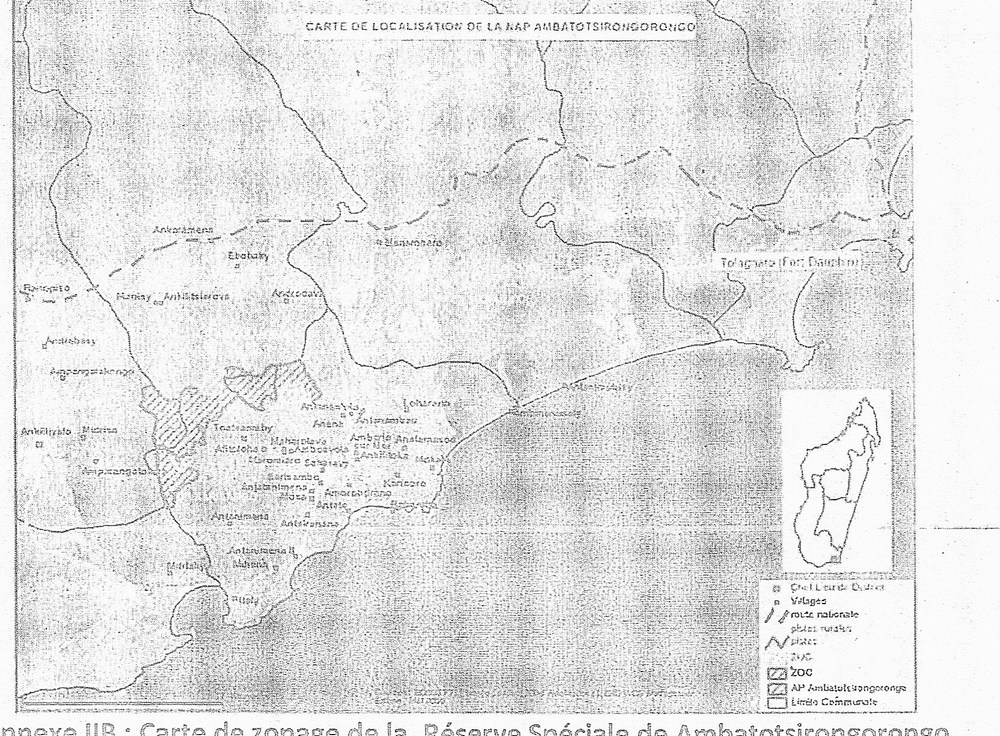 Annexe IIB : Carte de zonage de la Réserve Spéciale de Ambatotsirongorongo 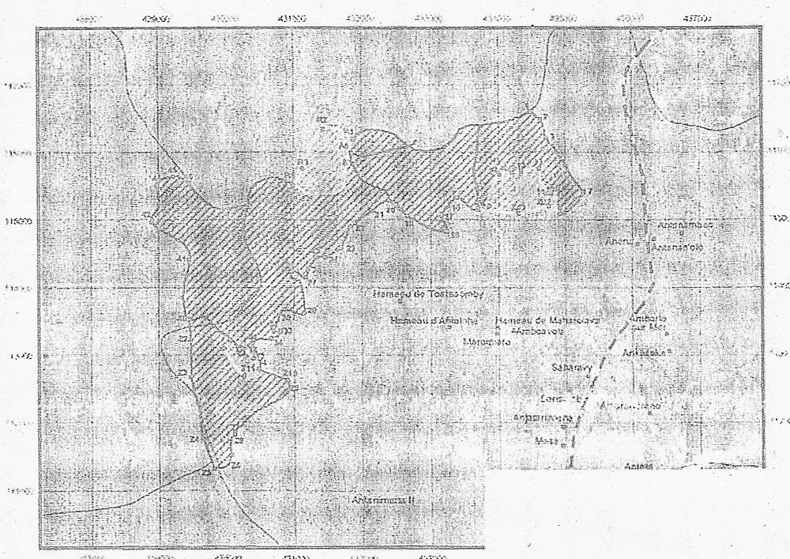
ANNEXE III du décret n°2015-792 du 28 avril 2015 Portant création de l’aire protégée dénommée « Ambatotsirongorongo» district Tolagnaro, région Anosy Descriptifs et coordonnées des limites externes de l’Aire Protége Ambatotsirongorongo (Projection: Laborde Madagascar) 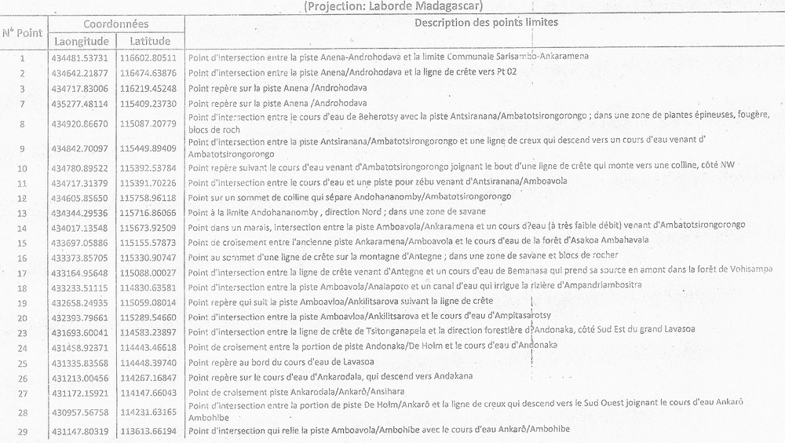
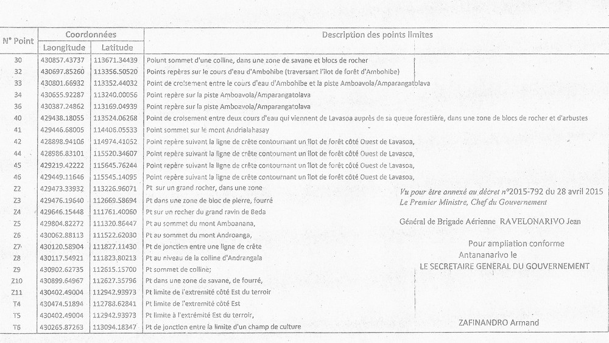 ANNEXE IV du décret n°2015-792 du 28 avril 2015 Portant création de l’Aire Protégée dénommée « Ambatotsirongorongo» district Tolagnaro, région Anosy A.Descriptifs et coordonnéesgéoréferenciées des points et des limites du Noyau Dur l’Aire Protégée Ambatotsirongorongo (Projection: Laborde Madagascar)
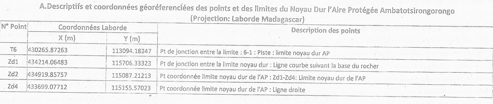 B. Descriptifs et coordonnées des points et des limites de la Zone d’occupation contrôlée de la Réserve Spéciale de Ambatotsirongorongo (Projection: Laborde Madagascar)
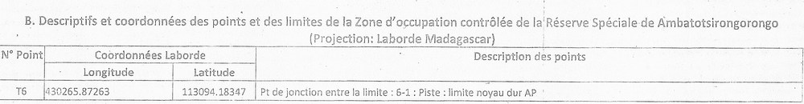 C. Coordonnées géoréferencées et les descriptifs des points limites des Zones d’Utilisation Contrôléede l’Aire Protégée Ambatotsirongorongo (Projection: Laborde Madagascar) 1. ZUC 1 dite " ZUC de –Sarisambo Ambatomizaka "
2. ZUC 2 dite " ZUC d’Ankaramena Andohanaomby "
3. ZUC 3 dite " Sarisambo Antataova"
Vu pour être annexé au décret n°2015-792 du 28 avril 2015 Le Premier Ministre, Chef du Gouvernement
Général de Brigade Aérienne RAVELONARIVO Jean
| |||||||||||||||||||||||||||||||||||||||||||||||||||||||||||||||||||||||||||||||||||||||||||||||||||||||||||||||||||||||||||||||||||||||||||||||||||||||||||||||||||||||||||||||||||||||||||||||||||||||||||||||||||||||||||||||||||||||||||||||||||||||||||||||||||||||||||||||||||||||||||||||||||||||||||||||||||||||||||||||||||||||||||||||||||||||||||||||||||||||||||||||||||||||||||||||||||||||||||||||||||||||||||||||||||||||||||||||||||||||||||||||||||||||||||||||||||||||||||||||||||||||||||||||||||||||||||||||||||||||||||||||||||||||||||||||||||||||||||||||||||||||||||||||||||||||||||||||
| 28 Avril 2015 | 28-04-2015 | Décret n° 2015-793 Portant création de l'Aire Protégée dénommée "Ankarabolava" Communes rurales : Vohipaho et Matanga, District de Vangaindrano, Région d'Atsimo Atsinanana. N° J.O: 3687 Date J.O: 06 Juin 2016 Page J.O: 3465ETAT : En vigueur Voir le texte (VF) | Décret | 2015-793 | D2015-793 | Portant création de l'Aire Protégée dénommée "Ankarabolava" Communes rurales : Vohipaho et Matanga, District de Vangaindrano, Région d'Atsimo Atsinanana. | 3687 | 06 Juin 2016 | 06-06-2016 | 3465 | En vigueur | Décret d'application des articles 2 et 21 de la loi n°2015-005 du 26/02/2015 . Voir annexes 1, 2, 3, 4 et 5, au même J.O page 3472 | undefined | MINISTERE DE L'ENVIRONNEMENT, DE L'ECOLOGIE ET DES FORETS (MEEF) | 44644 | REPOBLIKAN'I MADAGASIKARA Fitiavana-Tanindrazana-Fandrosoana ————— MINISTERE DE L’ENVIRONNEMENT, DE L’ECOLOGIE ET DES FORETS ————— DECRET N° 2015-793 Portant création de l’Aire Protégée Dénommée« ANKARABOLAVA» Communes Rurales : Vohipaho et Matanga district de Vangaindrano, Région d’Atsimo Atsinanana
LE PREMIER MINISTRE, CHEF DU GOUVERNEMENT,
D E C R E T E : TITRE PREMIER DE LA CREATION ET DELIMITATION DE L’AIRE PROTEGEE
Article premier. Conformément aux dispositions de l’article 2 et de l’article 21de la loi n°2015-005 du 26 février 2015 portant refonte du Code de gestion des Aires Protégées, il est créé une Aire Protégée dénommée « ANKARABOLAVA» située dans la REGION D’ATSIMO ATSINANANA, DISTRICT DE VANGAINDRANO, de catégorie « Réserve de Ressources Naturelles », équivalent de la catégorie VI selon la classification de l’Union Internationale pour la Conservation de la Nature.
La liste des Communes et Fokontany concernés par la Réserve de Ressources Naturelles « ANKARABOLAVA» figure en Annexe 1. L’aire protegée « ANKARABOLAVA» d’une superficie totale de SEPT CENT SOIXANTE TREIZE HECTARES (773 HA) fait partie du Système des Aires Protégées de Madagascar
Article 2. La carte de localisation de la Réserve de Ressources Naturelles «ANKARABOLAVA» figure en Annexe 2 du présent décret. Les descriptifs des points limites de l’Aire Protégée assortis des coordonnées géo référencées établies selon les normes du service topographique de la Réserve de Ressources Naturelles « ANKARABOLAVA» sont définis à l'Annexe 3du présent décret. Le périmètre de l’Aire Protégée dépendant du domaine privé de l’Etat doit être immatriculé au nom de l’Etat Malagasy aux fins de la délivrance d’un titre foncier portant le nom de l’Aire Protégée « ANKARABOLAVA» suivant la procédure de sécurisation foncière en vigueur. Le Ministère chargé des Aires Protégées doit déclencher le processus d’immatriculation auprès de la Direction générale chargée des Services Fonciers, dès la publication au Journal Officiel du présent décret.
TITRE II DE L’OBJECTIF DE GESTION DE L’AIRE PROTEGEE
Article 3. Les objectifs principaux de gestion poursuivis dans la Réserve de Ressources Naturelles «ANKARABOLAVA» sont principalement d’assurer, la restauration de la forêt pour conserver sa biodiversité et améliorer son importance socio-économique et culturelle par une gestion durable conjointe avec la population locale. Les objectifs spécifiques de gestion sont de :
L’activité de développement est à promouvoir dans la zone périphérique, afin d’améliorer le niveau de vie de la population.
TITRE III DE L’ORGANISATION DE GESTION DE L’AIRE PROTEGEE
Article 4. Le Ministère chargé des Aires Protégées est désignée gestionnaire de l’Aire Protégée. La délégation de Gestion peut toutefois être accordée par voie réglementaire à une ou des personnes morales de droit public ou de droit privé laquelle détermine les termes de délégation, les droits et obligations des parties.
TITRE IV DE LA GOUVERNANCE DE L’AIRE PROTEGEE
Article 5. Le mode de gouvernance qui s’applique à l’Aire Protégée est la cogestion de type collaboratif entre le gestionnaire ou le gestionnaire délégué et les communautés locales. Conformément au principe de gouvernance du Système des Aires Protégées de Madagascar tel que défini dans l’article 6 de la loi n°2015-005 du 26 février 2015, le gestionnaire ou le gestionnaire délégué doit, dans le cadre de gestion de l’Aire Protégée :
Le Comité d’Orientation et de Suivi assure le suivi de l’exécution des actions découlant du présent décret. Il est présidé par le Directeur chargé de l’Environnement, de l’Ecologie, de la Mer et des Forêts de la Circonscription concernée et a comme Vice-Président, le Chef de Région Atsimo Atsinanana. Le COS comprend notamment les Représentants de la Région, ceux des Services déconcentrés des ministères concernés , des collectivités territoriales décentralisées, du gestionnaire ou gestionnaire délégué de la Réserve de Ressources Naturelles «ANKARABOLAVA» et des représentants des Communautés de base riveraines de l’aire protégée et issues de la zone de protection, ainsi que toute personne ou organisme choisi pour ses compétences particulières.
TITRE V DE L’AMENAGEMENT DE L’AIRE PROTEGEE
Article 6. La Réserve de Ressources Naturelles« ANKARABOLAVA » est subdivisée suivant les unités d’aménagement définis dans le schéma d’aménagement décrit en Annexe 4 du présent décret :
Les coordonnées Laborde, la description des points sommets de la limite de Noyau Dur sont décrits et définis respectivement en Annexe 5 du présent décret.
Tout accès dans ces zones est restreint et réglementé suivant les textes en vigueur sur les AP à Madagascar :
L’étendue de la Zone Tampon (ZT) peut faire l’objet d’une révision selon les besoins du Plan d’Aménagement et de Gestion (PAG).
Zone périphérique qui est délimitée par une bordure de 200m de la limite de la AP. Cette zone est adjacente à la zone tampon et dont les activités anthropiques peuvent toujours avoir des répercussions sur l’aire protégée Les activités nouvelles dans ces zones doivent avoir l’objet d’une concertation entre les parties prenantes.
TITRE VI DE LA REGLE DE GESTION DE L’AIRE PROTEGEE
Article 7. Le Plan d’Aménagement et de Gestion précise les modalités de gestion de la Réserve de Ressources Naturelles «Ankarabolava», lesquelles doivent impliquer la population locale et comporte les mesures nécessaires pour contribuer au développement durable de la région
Article 8. Le gestionnaire et le gestionnaire délégué de la Réserve de Ressources Naturelles «Ankarabolava» assurent l'application des règles établies dans les outils de gestion constitués des cahiers de charges, des DINA, et des plans d'aménagement élaborés conjointement avec les COBA.
Article 9. Outre les cas prévus par les articles 41, 42, 44, 51, 52, et 53 de la Loi n° 2015-005 du 26 février 2015 portant refonte du Code de gestion des Aires Protégées, les activités suivantes sont strictement interdites à l’intérieur du noyau dur et la zone tampon de l’Aire Protégée :
Toutefois, sont notamment autorisés, conformément au plan de gestion :
Article 10. Conformément aux dispositions de l’article 43 alinéa 2 de la loi n°2015-005 du 26 février 2015 portant refonte du Code de Gestion des Aires Protégées, la visite de la Réserve de Ressources Naturelles « Ankarabolava» à des fins touristiques et de recherches scientifiques est soumise selon le cas au paiement des droits d’entrée, des droits de recherche, des droits de propriété intellectuelle, des droits de filmage dont les modalités de perception sont fixées par voie réglementaire.
TITRE VII DE LA REPRESSION DES INFRACTIONS COMMISES DANS L’AIRE PROTEGEE
Article11. Les infractions aux dispositions du présent Décret sont constatées et punies conformément aux dispositions l’article 55 à 79 de la loi 2015-005 du 26 février 2015 portant refonte du Code de gestion des Aires Protégées et, en cas de silence, aux autres textes en vigueur.
TITRE VIII DISPOSITIONS FINALES
Article 12. Les Annexes, 1, 2, 3, 4, et 5 cités ci-dessus font partie intégrante du présent décret.
Article 13. En raison de l’urgence et conformément aux dispositions des articles 4 et 6 alinéa 2 de l’Ordonnance n° 62-041 du 19 septembre 1962 relative aux dispositions générales de droit interne et de droit international privé, le présent décret entre immédiatement en vigueur dès sa publication par voie radiodiffusée ou télévisée, indépendamment de son insertion au Journal officiel de la République.
Article 14. Le Ministre d’Etat chargé des Projets Présidentiels, de l’Aménagement du Territoire et de l’Equipement ; Le Ministre auprès de la Présidence chargé des Mines et du Pétrole ; Le Ministre de la Justice, Garde des Sceaux ; Le Ministre de l’Intérieur et de la Décentralisation ; Le Ministre d’Agriculture ; Le Ministre des Travaux Publics ; Le Ministre du Tourisme, des Transports et de la Météorologie ; Le Ministre de l’Energie et des Hydrocarbures ; Le Ministre de I ’Enseignement Supérieur et de la Recherche Scientifique ; Le Ministre de l’Environnement, de l’Ecologie, de la Mer et des Forêts ; Le Ministre des Ressources Halieutiques et de la Pêche ; Le Ministre de l’Elevage ; Le Ministre de la Culture et de l’Artisanat ; Le Ministre de la Communication et des Relations avec les Institutions ; Le Ministre de la Population, de la Protection Sociale et de la Promotion de la Femme et Le Secrétaire d’Etat auprès du Ministère de la Défense Nationale chargé de la Gendarmerie sont chargés, chacun en ce qui le concerne, de l’exécution du présent décret qui sera publié au Journal Officiel de la République de Madagascar.
Antananarivo, le 28 Avril 2015 Général de Brigade Aérienne RAVELONARIVO Jean Par le Premier Ministre, Chef du Gouvernement,
Le Ministre d’Etat chargé des Projets Présidentiels, de l’Aménagement du Territoire et de l’Equipement, RAKOTOVAO Rivo
Le Ministre auprès de la Présidence chargé des Mines et du Pétrole, LALAHARISAINA Joéli Valérien
Le Ministre de la Justice, Garde des Sceaux, RAMANANTENASOA Noëline
Le Ministre de l’Intérieur et de la Décentralisation, MAHAFALY Solonandrasana Olivier
Le Ministre d’Agriculture, RAVATOMANGA Roland
Le Ministre des Travaux Publics, RATSIRAKA Iarovana Roland
Le Ministre du Tourisme, des Transports et de la Météorologie, ANDRIANTIANA Jacques Ulrich
Le Ministre de l’Energie et des Hydrocarbures, HORACE Gatien
Le Ministre de l’Enseignement Supérieur et de la Recherche Scientifique, RASOAZANANERA Marie Monique
Le Ministre de l’Environnement, de l’Ecologie, de la Mer et des Forêts, BEBOARIMISA Ralava
Le Ministre des Ressources Halieutiques et de la Pêche, AHMAD
Le Ministre de l’Elevage, RAMPARANY Anthelme
Le Ministre de la Culture et de l’Artisanat, RASAMOELINA Brigitte
Le Ministre de la Communication et des Relations avec les Institutions, ANDRIANJAT0 RAZAFINDAMBO Vonison
Le Ministre de la Population, de la Protection Sociale et de la Promotion de la Femme, RËALY Onitiana Voahariniaina
Le Secrétaire d’Etat auprès du Ministère de la Défense Nationale chargé de la Gendarmerie, Général de corps d’armée PAZA Didier Gérard Annexe 1: | |||||||||||||||||||||||||||||||||||||||||||||||||||||||||||||||||||||||||||||||||||||||||||||||||||||||||||||||||||||||||||||||||||||||||||||||||||||||||||||||||||||||||||||||||||||||||||||||||||||||||||||||||||||||||||||||||||||||||||||||||||||||||||||||||||||||||||||||||||||||||||||||||||||||||||||||||||||||||||||||||||||||||||||||||||||||||||||||||||||||||||||||||||||||||||||||||||||||||||||||||||||||||||||||||||||||||||||||||||||||||||||||||||||||||||||||||||||||||||||||||||||||||||||||||||||||||||||||||||||||||||||||||||||||||||||||||||||||||||||||||||||||||||||||||||||||||||||||
| 28 Avril 2015 | 28-04-2015 | Décret n° 2015-794 Portant création de l'Aire Protégée dénommée "Agnakatrika" Communes rurales : Matanga et Tsiaofana, District de Vangaindrano, Région d'Atsimo Atsinanana. N° J.O: 3687 Date J.O: 06 Juin 2016 Page J.O: 3496ETAT : En vigueur Voir le texte (VF) | Décret | 2015-794 | D2015-794 | Portant création de l'Aire Protégée dénommée "Agnakatrika" Communes rurales : Matanga et Tsiaofana, District de Vangaindrano, Région d'Atsimo Atsinanana. | 3687 | 06 Juin 2016 | 06-06-2016 | 3496 | En vigueur | Décret d'application des articles 2 et 21 de la loi n°2015-005 du 26/02/2015 . Voir annexes 1, 2, 3, 4 et 5, au même J.O page 3503 | undefined | MINISTERE DE L'ENVIRONNEMENT, DE L'ECOLOGIE ET DES FORETS (MEEF) | 44645 | REPOBLIKAN'I MADAGASIKARA Fitiavana-Tanindrazana-Fandrosoana ————— MINISTERE DE L’ENVIRONNEMENT, DE L’ECOLOGIE ET DES FORETS ————— DECRET N° 2015-794 Portant création de l’Aire Protégée dénommée «AGNAKATRIKA» Communes rurales : Matanga et Tsiaofana, district de Vangaindrano, Région d’Atsimo Atsinanana
LE PREMIER MINISTRE, CHEF DU GOUVERNEMENT,
D E C R E T E :
TITRE PREMIER DE LA CREATION ET DELIMITATION DE L’AIRE PROTEGEE
Article premier. Conformément aux dispositions de l’article 2 et de l’article 21de la loi n° 2015-005 du 26 février 2015 portant refonte du Code de gestion des Aires Protégées, il est créé une Aire Protégée dénommée « AGNAKATRIKA» de catégorie« Réserve de Ressources Naturelles »située dans la REGION D’ATSIMO ATSINANANA, DISTRICT DE VANGAINDRANO, équivalente de la catégorie VI selon la classification de l’Union Internationale pour la Conservation de la Nature. La liste des Communes et Fokontany concernés par la Réserve de Ressources Naturelles « AGNAKATRIKA» figure en Annexe 1. La Réserve de Ressources Naturelles «AGNAKATRIKA» d’une superficie totale deSEPT CENT QUATRE VINGT HECTARES (780Ha)fait partie du Système des Aires Protégées de Madagascar Article 2. La carte de localisation de la Réserve de Ressources Naturelles «AGNAKATRIKA» figure en Annexe 2 du présent décret. Les descriptifs des points limites de l’Aire Protégée assortis des coordonnées géo référencées établies selon les normes du service topographique décrivant la Réserve de Ressources Naturelles « AGNAKATRIKA» sont définis à l'Annexe 3du présent décret Le périmètre de l’Aire Protégée dépendant du domaine privé de l’Etat doit être immatriculé au nom de l’Etat Malagasy aux fins de la délivrance d’un titre foncier portant le nom de l’Aire Protégée « AGNAKATRIKA» suivant la procédure de sécurisation foncière en vigueur.
Le Ministère chargé des Aires Protégées doit déclencher le processus d’immatriculation auprès de la Direction générale chargée des Services Fonciers, dès la publication au Journal Officiel du présent décret.
TITRE II DE L’OBJECTIF DE GESTION DE L’AIRE PROTEGEE
Article 3. Les objectifs principaux de gestion poursuivis dans la Réserve de Ressources Naturelles «AGNAKATRIKA» sont principalement d’assurer, la restauration de la forêt pour conserver sa biodiversité et améliorer son importance socio-économique et culturelle par une gestion durable conjointe avec la population locale.Les objectifs spécifiques de gestion sont de :
L’activité de développement est à promouvoir dans la zone périphérique, afin d’améliorer le niveau de vie de la population.
TITRE III DE L’ORGANISATION DE GESTION DE L’AIRE PROTEGEE
Article 4. Le Ministère chargé des Aires Protégées est désignée gestionnaire de l’Aire Protégée AGNAKATRIKA. La délégation de Gestion peut toutefois être accordée par voie réglementaire à une ou des personnes morales de droit public ou de droit privé laquelle détermine les termes de délégation, les droits et obligations des parties.
TITRE IV DE LA GOUVERNANCE DE L’AIRE PROTEGEE
Article 5. Le mode de gouvernance qui s’applique à l’Aire Protégée est la cogestion de type collaboratif entre le gestionnaire ou le gestionnaire délégué et les communautés locales. Conformément au principe de gouvernance du Système des Aires Protégées de Madagascar tel que défini dans l’article 6 de la loi n°2015-005 du 26 février 2015, le gestionnaire ou le gestionnaire délégué doit, dans le cadre de gestion de l’Aire Protégée :
Le Comité d’Orientation et de Suivi assure le suivi de l’exécution des actions découlant du présent décret. Il est présidé par le Directeur chargé de l’Environnement, de l’Ecologie, de la Mer et des Forêts de la Circonscription concernée et a comme Vice-Président, le Chef de Région Atsimo Atsinanana. Le COS comprend notamment les Représentants de la Région, ceux des Services déconcentrés des ministères concernés , des collectivités territoriales décentralisées, du gestionnaire ou gestionnaire délégué de la Réserve de Ressources Naturelles « AGNAKATRIKA» et des représentants des Communautés de base riveraines de l’aire protégée et issues de la zone de protection, ainsi que toute personne ou organisme choisi pour ses compétences particulières.
TITRE V DE L’AMENAGEMENT DE L’AIRE PROTEGEE Article 6. La Réserve de Ressources Naturelles «AGNAKATRIKA» est subdivisée suivant les unités d’aménagement définis dans le schéma d’aménagement décrit en Annexe 4 du présent décret. -Noyau Dur, occupant une surface totale de 99 hectares. Cette partie sera gérée comme étant une zone de conservation stricte ; Les coordonnées Laborde, la description des points sommets de la limite de Noyau Dur sont décrits et définis respectivement en Annexe 5 du présent décret. -Zone Tampon entourant les Noyau dur, ayant comme superficie de 691 Hectares Tout accès dans ces zones est restreint et réglementé suivant les textes en vigueur sur les AP à Madagascar :
L’étendue de la Zone Tampon (ZT) peut faire l’objet d’une révision selon les besoins du Plan d’Aménagement et de Gestion (PAG). Zone périphérique qui est délimitée par une bordure de 200m de la limite de la NAP. Cette zone est adjacente à la zone tampon et dont les activités anthropiques peuvent toujours avoir des répercussions sur l’aire protégée. Les activités nouvelles dans ces zones doivent avoir l’objet d’une concertation entre les parties prenantes.
TITRE VI DE LA REGLE DE GESTION DE L’AIRE PROTEGEE
Article 7. Le Plan d’Aménagement et de Gestion précise les modalités de gestion de la Réserve de Ressources Naturelles «AGNAKATRIKA», lesquelles doivent impliquer la population locale et comporte les mesures nécessaires pour contribuer au développement durable de la région
Article 8. Le gestionnaire et le gestionnaire délégué de la Réserve de Ressources Naturelles «AGNAKATRIKA» assurent l'application des règles établies dans les outils de gestion constitués des cahiers de charges, des DINA, et des plans d'aménagement élaborés conjointement avec les COBA.
Article 9. Outre les cas prévus par les articles 41, 42, 44, 51, 52, et 53 de la Loi n° 2015-005 du 26 février 2015 portant refonte du Code de gestion des Aires Protégées, les activités suivantes sont strictement interdites à l’intérieur du noyau dur et la zone tampon de l’Aire Protégée :
Toutefois, sont notamment autorisés, conformément au plan de gestion :
Article 10. Conformément aux dispositions de l’article 43 alinéa 2 de la loi n°2015-005 du 26 février 2015 portant refonte du Code de Gestion des Aires Protégées, la visite de la Réserve de Ressources Naturelles «AGNAKATRIKA» à des fins touristiques et de recherches scientifiques est soumise selon le cas au paiement des droits d’entrée, des droits de recherche, des droits de propriété intellectuelle, des droits de filmage dont les modalités de perception sont fixées par voie réglementaire.
TITRE VII DE LA REPRESSION DES INFRACTIONS COMMISES DANS L’AIRE PROTEGEE
Article 11. Les infractions aux dispositions du présent Décret sont constatées et punies conformément aux dispositions l’article 55 à 79 de la loi 2015-005 du 26 février 2015 portant refonte du Code de gestion des Aires Protégées et, en cas de silence, aux autres textes en vigueur.
TITRE VIII DISPOSITIONS FINALES Article 12. Les Annexes, 1, 2, 3, 4, et 5 cités ci-dessus font partie intégrante du présent décret.
Article 13. En raison de l’urgence et conformément aux dispositions des articles 4 et 6 alinéa 2 de l’Ordonnance n° 62-041 du 19 septembre 1962 relative aux dispositions générales de droit interne et de droit international privé, le présent décret entre immédiatement en vigueur dès sa publication par voie radiodiffusée ou télévisée, indépendamment de son insertion au Journal officiel de la République.
Article 14. Le Ministre d’Etat chargé des Projets Présidentiels, de l’Aménagement du Territoire et de l’Equipement ; Le Ministre auprès de la Présidence chargé des Mines et du Pétrole ; Le Ministre de la Justice, Garde des Sceaux ; Le Ministre de l’Intérieur et de la Décentralisation ; Le Ministre d’Agriculture ; Le Ministre des Travaux Publics ; Le Ministre du Tourisme, des Transports et de la Météorologie ; Le Ministre de l’Energie et des Hydrocarbures ; Le Ministre de I ’Enseignement Supérieur et de la Recherche Scientifique ; Le Ministre de l’Environnement, de l’Ecologie, de la Mer et des Forêts ; Le Ministre des Ressources Halieutiques et de la Pêche ; Le Ministre de l’Elevage ; Le Ministre de la Culture et de l’Artisanat ; Le Ministre de la Communication et des Relations avec les Institutions ; Le Ministre de la Population, de la Protection Sociale et de la Promotion de la Femme et Le Secrétaire d’Etat auprès du Ministère de la Défense Nationale chargé de la Gendarmerie sont chargés, chacun en ce qui le concerne, de l’exécution du présent décret qui sera publié au Journal Officiel de la République de Madagascar.
Antananarivo, le 28 Avril 2015 Général de Brigade Aérienne RAVELONARIVO Jean Par le Premier Ministre, Chef du Gouvernement,
Le Ministre d’Etat chargé des Projets Présidentiels, de l’Aménagement du Territoire et de l’Equipement, RAKOTOVAO Rivo
Le Ministre auprès de la Présidence chargé des Mines et du Pétrole, LALAHARISAINA Joéli Valérien
Le Ministre de la Justice, Garde des Sceaux, RAMANANTENASOA Noëline
Le Ministre de l’Intérieur et de la Décentralisation, MAHAFALY Solonandrasana Olivier
Le Ministre d’Agriculture, RAVATOMANGA Roland
Le Ministre des Travaux Publics, RATSIRAKA Iarovana Roland
Le Ministre du Tourisme, des Transports et de la Météorologie, ANDRIANTIANA Jacques Ulrich
Le Ministre de l’Energie et des Hydrocarbures, HORACE Gatien
Le Ministre de l’Enseignement Supérieur et de la Recherche Scientifique, RASOAZANANERA Marie Monique
Le Ministre de l’Environnement, de l’Ecologie, de la Mer et des Forêts, BEBOARIMISA Ralava
Le Ministre des Ressources Halieutiques et de la Pêche, AHMAD
Le Ministre de l’Elevage, RAMPARANY Anthelme
Le Ministre de la Culture et de l’Artisanat, RASAMOELINA Brigitte
Le Ministre de la Communication et des Relations avec les Institutions, ANDRIANJAT0 RAZAFINDAMBO Vonison
Le Ministre de la Population, de la Protection Sociale et de la Promotion de la Femme, RËALY Onitiana Voahariniaina
Le Secrétaire d’Etat auprès du Ministère de la Défense Nationale chargé de la Gendarmerie, Général de corps d’armée PAZA Didier Gérard
Annexe 1: | |||||||||||||||||||||||||||||||||||||||||||||||||||||||||||||||||||||||||||||||||||||||||||||||||||||||||||||||||||||||||||||||||||||||||||||||||||||||||||||||||||||||||||||||||||||||||||||||||||||||||||||||||||||||||||||||||||||||||||||||||||||||||||||||||||||||||||||||||||||||||||||||||||||||||||||||||||||||||||||||||||||||||||||||||||||||||||||||||||||||||||||||||||||||||||||||||||||||||||||||||||||||||||||||||||||||||||||||||||||||||||||||||||||||||||||||||||||||||||||||||||||||||||||||||||||||||||||||||||||||||||||||||||||||||||||||||||||||||||||||||||||||||||||||||||||||||||||||

.jpg)